← 回股市觀察
逐檔技術線型分析
→ 看當日逐檔技術線型分析（全檔） 歷次逐檔分析
2026/11/24 · 成交金額上市前 50 名 ＋ 上櫃前 20 名（共 70 檔）· 公開資料整理
40122.35
加權指數 +3,310.46 點（+8.99%）
1053 / 26
上市個股上漲／下跌家數
上漲 97.1% · 下跌 2.4% · 持平 0.6%（共 1085 檔）
840 / 34
上櫃個股上漲／下跌家數
上漲 94.5% · 下跌 3.8% · 持平 1.7%（共 889 檔）
統計範圍：當日成交金額上市前 50 名 ＋ 上櫃前 20 名（共 70 檔，皆為 4 位數代號的個股，不含 ETF／權證）。
兩個市場各自取前 N 名後合併呈現，卡片上標示市場別（上市／上櫃），清單也附市場分布。
條件統計：上市 上升趨勢：底底高 ＋ 頭頭高 2 檔、突破頸線 1 檔、底底高 3 檔、頭頭高 9 檔、站上月線 14 檔、月線向上 8 檔、外資買超 9 檔、量價攻擊（收紅＋大量） 33 檔、跌破前低（線型轉弱） 11 檔；上櫃 上升趨勢：底底高 ＋ 頭頭高 0 檔、突破頸線 1 檔、底底高 0 檔、頭頭高 4 檔、站上月線 6 檔、月線向上 3 檔、外資買超 5 檔、量價攻擊（收紅＋大量） 10 檔、跌破前低（線型轉弱） 4 檔。
五項全滿足（底底高＋頭頭高＋站上月線＋月線向上＋5 日線向上）：上市 無；上櫃 無。
資料日 2026/11/24。籌碼：上市為證交所三大法人、上櫃為櫃買中心三大法人；上櫃另附融資餘額。
每一檔都附上 K 線圖與線型說明：黃圈是轉折低點、粉圈是轉折高點、藍線是月線。
圖上兩條水平虛線、左側標數值：高點頸線（紅，連到最多「轉折高點」的那條水平線，代表上方壓力帶；收盤站上就算突破）與
低點頸線（綠，連到最多「轉折低點」的那條水平線，代表下方支撐帶；收盤跌破就算跌破）；
兩條線都只看最近 6 個轉折點、容忍同一價位帶 4%，連不到 2 個轉折點就不畫。
卡片的標籤可以點回上方對應清單，清單裡的股名也可以點到該檔。
本頁為公開資料（證交所每日收盤行情與三大法人、櫃買中心每日收盤行情與三大法人、Yahoo 股市日線）的整理與觀察，
不構成投資建議，不報牌、不預測、不下買賣決策。
大盤趨勢快篩（加權指數） 資料日 2026/11/24・來源：證交所公開資料
主狀態：跌破月線
前一交易日對照（11/23）：跌破頸線（M 頭成立）（量比 20 1.14） → 今日跌破月線（量比 20 0.46）
指標、數值、判定（點開看 12 項明細：均線位置／排列、月線方向、頸線、轉折結構、位階、量價…）
加權指數今天漲 3,310.46 點（+8.99%），收 40,122.35、跌破月線 41,959.40；月線還在下彎，MA10 這條短均還沒收復，離高點頸線 47,615.17 還差 15.74%。
- 均線位置：4 條均線站上 1 條；沒站上的是 MA10 40,374.57（收盤比它低 0.62%）、MA20 41,959.40（收盤比它低 4.38%）、MA60 45,494.29（收盤比它低 11.81%）
- 月線方向：月線 MA20 現在 41,959.40，比 5 個交易日前低 2,027.56 點 → 下彎
- 量能：集中市場成交 4,325.6 億，比 5 日均量少很多（0.48 倍）、比 20 日均量少很多（0.46 倍）
- 關鍵價位：高點頸線 47,615.17，還差 15.74%；低點頸線 38,610.95，還在下方 3.91%
- 大小型股：加權 +8.99%、櫃買 +8.24%，兩邊同向

圖說：加權指數日 K（與個股圖相同標記）：黃圈＝轉折低點、粉圈＝轉折高點、虛線小圈＝還沒確認的轉折、藍線＝月線 MA20、水平虛線＝高點／低點頸線。最後一根是資料日當天。
本區塊為公開資料的技術面觀察，不構成投資建議，
不報牌、不預測、不下買賣決策。成交金額為集中市場總成交金額（含 ETF／權證），
與頁首摘要的「上市個股成交金額」口徑不同。標籤是統計，不是評分、也不是推薦。
上市 vs 上櫃（同期快篩）
加權 +8.99% vs 櫃買 +8.24%（同向） → 同向
（兩個市場分開寫，不合併成一個數字；櫃買為 TPEX 公開資料）
櫃買歷史：TPEX 逐日回補 130 根；來源：櫃買中心 www/zh-tw/indexInfo/sectinx（逐日，官方；OpenAPI tpex_index 只回當月）
（TPEX OpenAPI 只回當月，故逐日回補；歷史不足就不算該條均線並標「資料不足」，不用錯數字）
近 20 個交易日大盤狀態回溯（最新在上）（點開看逐日主狀態／量比／量價象限）
用同一支程式回算最近 20 個交易日（主狀態 S1~S8 與量比 20 皆為當日收盤當時的判定，
不是事後調整）；量比 20 未公布的日子寫「—」。
好條件最多的（前 10）
不好條件最多的（前 10）
本期市場狀態：空頭（等權指數在 60 日均線之下）（空頭期間：趨勢類條件反向（回測後 20 日差距 −0.9% ~ −2.1%），本排行改用超跌反轉類（跌破前低／在月線之下／月線下彎））
好條件（4 項）：跌破前低、在月線之下、月線下彎、外資買超。
不好條件（5 項）：站上月線、月線向上、突破頸線、量價攻擊（收紅＋大量）、外資賣超。
兩邊都是同一組資料（日線結構＋當日收盤量價籌碼）算出來的「符合項目數」，只是方向相反；
條件數不是評分、也不是推薦，不構成投資建議。
上升趨勢：底底高 ＋ 頭頭高（2 上市 2／上櫃 0）
量價攻擊（收紅＋大量）（43 上市 33／上櫃 10）
跌破前低（線型轉弱）（15 上市 11／上櫃 4）
逐檔分析（70 檔）
區間或轉弱 成交金額 294.65 億・全榜第 1 名（上市第 1 名）
好條件 2/4：在月線之下、月線下彎
不好條件 1/5：外資賣超

今天收紅、但成交量比平均少、跌破月線 2249.75，離高點頸線 2435 還差 8.4%，轉折還沒走出明顯方向。
- 月線位置：收盤 2230 在月線 2249.75 之下；5 日線 2107 也在月線之下（短均在下）；月線走平或向下、5 日線走平或向下
- 量能：成交量是 20 日均量的 0.27 倍，比 20 日均量少很多；收紅但量縮，量價背離
- 關鍵價位：高點頸線 2435 還沒突破，差 8.4%；最近轉折高點 2395（低於 6.9%）；最近轉折低點 2020（高於 10.4%）
- 轉折結構：低點 2375、2375、2020 與高點 2435、2395、2395 都沒有明顯遞增，屬於區間震盪或轉弱；還沒確認的轉折低點 11-20 1970、11-23 1970；還沒確認的轉折高點 11-09 2290、11-24 2230（圖上虛線小圈）
區間或轉弱 成交金額 126.93 億・全榜第 2 名（上市第 2 名）
好條件 3/4：跌破前低、在月線之下、月線下彎
不好條件 1/5：外資賣超

今天帶量收黑、跌破月線 226.15，跌破前一個轉折低點（高點頸線 291.5 還在收盤上方），轉折還沒走出明顯方向。
- 月線位置：收盤 183.5 在月線 226.15 之下；5 日線 191 也在月線之下（短均在下）；月線走平或向下、5 日線走平或向下
- 量能：成交量是 20 日均量的 4.32 倍，比 20 日均量大不少；收黑卻量增，量價背離
- 關鍵價位：高點頸線 291.5 還沒突破、還在收盤上方 37.0%；最近轉折高點 247.5（低於 25.9%）；最近轉折低點 193（低於 4.9%）
- 轉折結構：低點 265.5、226.5、193 與高點 290、291.5、247.5 都沒有明顯遞增，屬於區間震盪或轉弱；還沒確認的轉折低點 11-17 201、11-23 173；還沒確認的轉折高點 11-18 226、11-24 210.5（圖上虛線小圈）
區間或轉弱 成交金額 110.21 億・全榜第 3 名（上市第 3 名）
好條件 2/4：月線下彎、外資買超
不好條件 2/5：站上月線、量價攻擊（收紅＋大量）
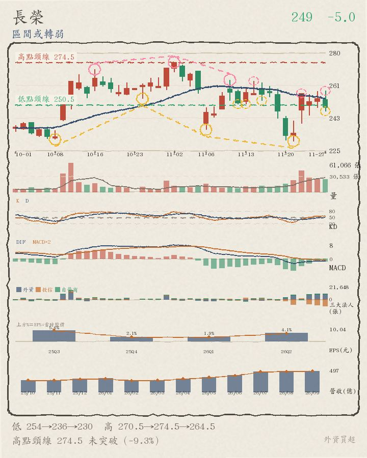
今天帶量收紅、站上月線 256，離高點頸線 274.5 還差 6.4%，轉折還沒走出明顯方向。
- 月線位置：收盤 257 在月線 256 之上；5 日線 245.8 也在月線之下（短均在下）；月線走平或向下、5 日線走平或向下
- 量能：成交量是 20 日均量的 3.78 倍，比 20 日均量大不少；收紅又量增，量價配合
- 關鍵價位：高點頸線 274.5 還沒突破，差 6.4%；最近轉折高點 264.5（低於 2.8%）；最近轉折低點 236.5（高於 8.7%）
- 轉折結構：低點 231、254、236.5 與高點 270.5、274.5、264.5 都沒有明顯遞增，屬於區間震盪或轉弱；還沒確認的轉折低點 11-17 253、11-23 230；還沒確認的轉折高點 11-16 264、11-24 257（圖上虛線小圈）
高點墊高、底部不穩 成交金額 103.68 億・全榜第 4 名（上市第 4 名）
好條件 0/4：無
不好條件 3/5：站上月線、月線向上、外資賣超

今天帶量收黑、站上月線 161.8，離高點頸線 171 還差 3.8%，高點還在墊高（但底部沒同步墊高）。
- 月線位置：收盤 164.5 在月線 161.8 之上；5 日線 164.4 也在月線之上（短均在上）；月線向上、5 日線向上
- 量能：成交量是 20 日均量的 3.50 倍，比 20 日均量大不少；收黑卻量增，量價背離
- 關鍵價位：高點頸線 171 還沒突破，差 3.8%；最近轉折高點 171（低於 3.8%）；最近轉折低點 156.5（高於 5.1%）
- 轉折結構：高點 147、166.5、171 墊高 16.3%（頭頭高），但低點 156.5、156.5、156.5 沒有同步墊高；還沒確認的轉折低點 11-20 160、11-24 160.5；還沒確認的轉折高點 11-16 168、11-24 170.5（圖上虛線小圈）
區間或轉弱 成交金額 70.27 億・全榜第 6 名（上市第 5 名）
好條件 2/4：在月線之下、月線下彎
不好條件 2/5：量價攻擊（收紅＋大量）、外資賣超

今天帶量收紅、跌破月線 289.125，離高點頸線 349 還差 19.1%，轉折還沒走出明顯方向。
- 月線位置：收盤 282.5 在月線 289.125 之下；5 日線 263.8 也在月線之下（短均在下）；月線走平或向下、5 日線走平或向下
- 量能：成交量是 20 日均量的 1.52 倍，比 20 日均量大不少；收紅又量增，量價配合
- 關鍵價位：高點頸線 349 還沒突破，差 19.1%；最近轉折高點 338（低於 16.4%）；最近轉折低點 272（高於 3.9%）
- 轉折結構：低點 311、311、272 與高點 349、337.5、338 都沒有明顯遞增，屬於區間震盪或轉弱；還沒確認的轉折低點 11-18 253、11-20 247.5；還沒確認的轉折高點 11-19 266.5、11-24 282.5（圖上虛線小圈）
區間或轉弱 成交金額 69.57 億・全榜第 7 名（上市第 6 名）
好條件 2/4：在月線之下、月線下彎
不好條件 1/5：外資賣超
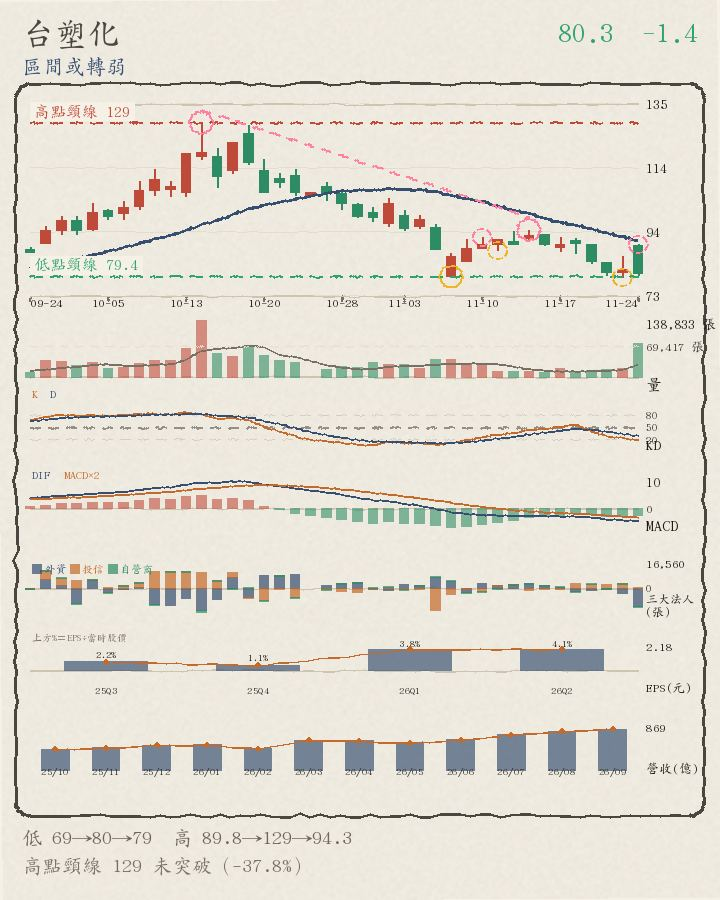
今天帶量收黑、跌破月線 90.84，離高點頸線 129 還差 37.8%，轉折還沒走出明顯方向。
- 月線位置：收盤 80.3 在月線 90.84 之下；5 日線 83.34 也在月線之下（短均在下）；月線走平或向下、5 日線走平或向下
- 量能：成交量是 20 日均量的 3.52 倍，比 20 日均量大不少；收黑卻量增，量價背離
- 關鍵價位：高點頸線 129 還沒突破，差 37.8%；最近轉折高點 94.3（低於 14.8%）；最近轉折低點 79.2（高於 1.4%）
- 轉折結構：低點 68.6、80、79.2 與高點 89.8、129、94.3 都沒有明顯遞增，屬於區間震盪或轉弱；還沒確認的轉折低點 11-11 87.6、11-23 79；還沒確認的轉折高點 11-10 92、11-24 89.6（圖上虛線小圈）
區間或轉弱 成交金額 59.89 億・全榜第 8 名（上市第 7 名）
好條件 3/4：跌破前低、在月線之下、月線下彎
不好條件 1/5：外資賣超
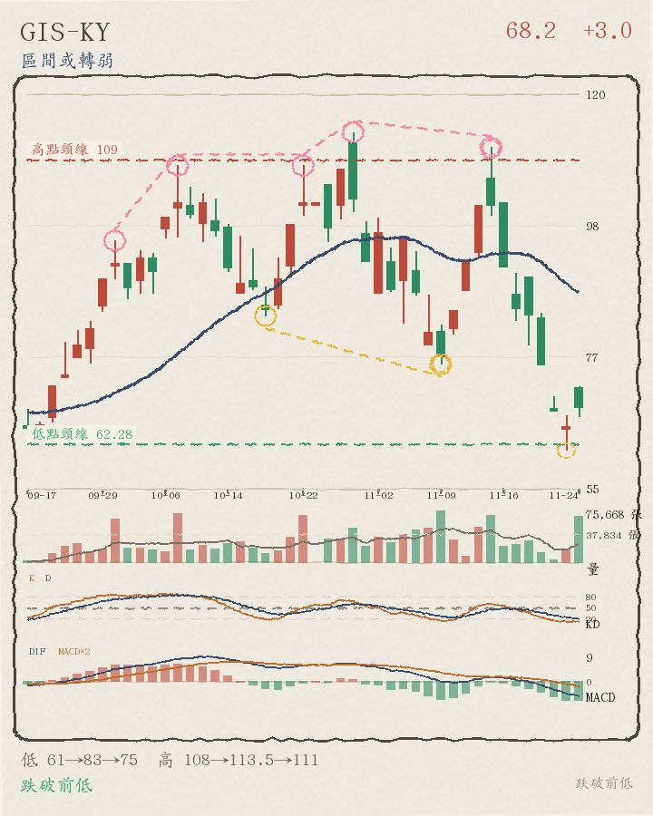
今天帶量收黑、跌破月線 86.995，跌破前一個轉折低點（高點頸線 113.5 還在收盤上方），轉折還沒走出明顯方向。
- 月線位置：收盤 64.8 在月線 86.995 之下；5 日線 71.28 也在月線之下（短均在下）；月線走平或向下、5 日線走平或向下
- 量能：成交量是 20 日均量的 2.50 倍，比 20 日均量大不少；收黑卻量增，量價背離
- 關鍵價位：高點頸線 113.5 還沒突破、還在收盤上方 42.9%；最近轉折高點 111（低於 41.6%）；最近轉折低點 75.4（低於 14.1%）
- 轉折結構：低點 61.4、83.3、75.4 與高點 108、113.5、111 都沒有明顯遞增，屬於區間震盪或轉弱；還沒確認的轉折低點 11-23 61.2；還沒確認的轉折高點 11-24 71.7（圖上虛線小圈）
區間或轉弱 成交金額 58.06 億・全榜第 9 名（上市第 8 名）
好條件 2/4：在月線之下、月線下彎
不好條件 2/5：量價攻擊（收紅＋大量）、外資賣超
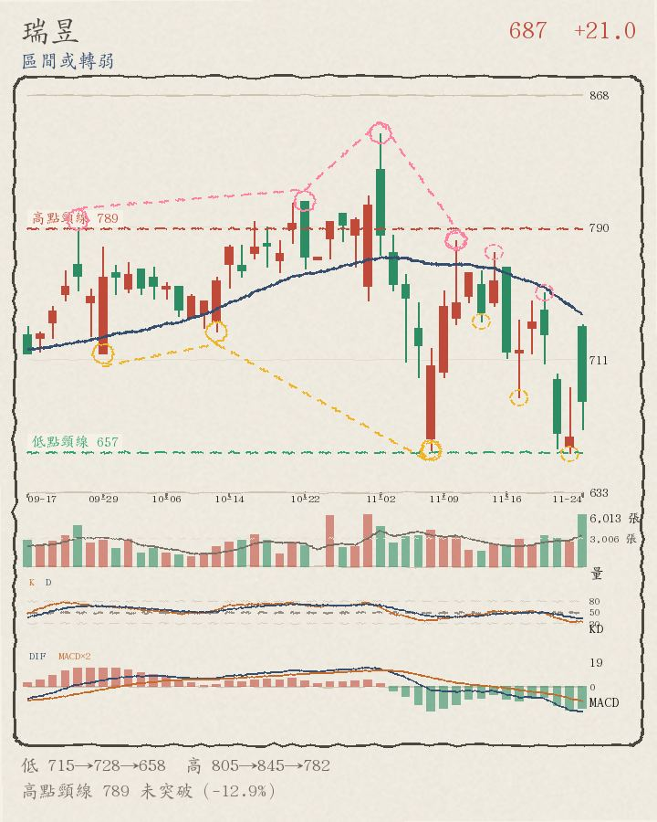
今天帶量收紅、跌破月線 738.7，離高點頸線 845 還差 17.9%，轉折還沒走出明顯方向。
- 月線位置：收盤 694 在月線 738.7 之下；5 日線 697.6 也在月線之下（短均在下）；月線走平或向下、5 日線走平或向下
- 量能：成交量是 20 日均量的 2.56 倍，比 20 日均量大不少；收紅又量增，量價配合
- 關鍵價位：高點頸線 845 還沒突破，差 17.9%；最近轉折高點 782（低於 11.3%）；最近轉折低點 658（高於 5.5%）
- 轉折結構：低點 715、728、658 與高點 805、845、782 都沒有明顯遞增，屬於區間震盪或轉弱；還沒確認的轉折低點 11-17 689、11-23 656；還沒確認的轉折高點 11-19 751、11-24 732（圖上虛線小圈）
區間或轉弱 成交金額 57.82 億・全榜第 10 名（上市第 9 名）
好條件 2/4：在月線之下、月線下彎
不好條件 2/5：量價攻擊（收紅＋大量）、外資賣超

今天帶量收紅、跌破月線 1243.75，離高點頸線 1410 還差 18.4%，轉折還沒走出明顯方向。
- 月線位置：收盤 1150 在月線 1243.75 之下；5 日線 1164 也在月線之下（短均在下）；月線走平或向下、5 日線走平或向下
- 量能：成交量是 20 日均量的 1.38 倍，比 20 日均量大不少；收紅又量增，量價配合
- 關鍵價位：高點頸線 1410 還沒突破，差 18.4%；最近轉折高點 1410（低於 18.4%）；最近轉折低點 1075（高於 7.0%）
- 轉折結構：低點 1155、1145、1075 與高點 1300、1255、1410 都沒有明顯遞增，屬於區間震盪或轉弱；還沒確認的轉折低點 11-11 1235、11-23 1065；還沒確認的轉折高點 11-09 1390、11-24 1215（圖上虛線小圈）
區間或轉弱 成交金額 55.96 億・全榜第 11 名（上市第 10 名）
好條件 1/4：月線下彎
不好條件 2/5：站上月線、外資賣超

今天收紅、但成交量比平均少、站上月線 3815，離高點頸線 5165 還差 21.6%，轉折還沒走出明顯方向。
- 月線位置：收盤 4050 在月線 3815 之上；5 日線 3749 也在月線之下（短均在下）；月線走平或向下、5 日線走平或向下
- 量能：成交量是 20 日均量的 0.10 倍，比 20 日均量少很多；收紅但量縮，量價背離
- 關鍵價位：高點頸線 5165 還沒突破，差 21.6%；最近轉折高點 4235（低於 4.4%）；最近轉折低點 3115（高於 30.0%）
- 轉折結構：低點 4430、4875、3115 與高點 5165、4245、4235 都沒有明顯遞增，屬於區間震盪或轉弱；還沒確認的轉折低點 11-20 3350、11-23 3350；還沒確認的轉折高點 11-18 4075、11-24 4050（圖上虛線小圈）
區間或轉弱 成交金額 53.66 億・全榜第 12 名（上市第 11 名）
好條件 2/4：在月線之下、月線下彎
不好條件 2/5：量價攻擊（收紅＋大量）、外資賣超

今天帶量收紅、跌破月線 865.2，離高點頸線 1005 還差 18.3%，轉折還沒走出明顯方向。
- 月線位置：收盤 821 在月線 865.2 之下；5 日線 795.2 也在月線之下（短均在下）；月線走平或向下、5 日線走平或向下
- 量能：成交量是 20 日均量的 1.96 倍，比 20 日均量大不少；收紅又量增，量價配合
- 關鍵價位：高點頸線 1005 還沒突破，差 18.3%；最近轉折高點 915（低於 10.3%）；最近轉折低點 790（高於 3.9%）
- 轉折結構：低點 946、946、790 與高點 1005、915、915 都沒有明顯遞增，屬於區間震盪或轉弱；還沒確認的轉折低點 11-17 810、11-20 746；還沒確認的轉折高點 11-24 833（圖上虛線小圈）
高點墊高、底部不穩 成交金額 49.77 億・全榜第 13 名（上市第 12 名）
好條件 3/4：跌破前低、在月線之下、月線下彎
不好條件 2/5：量價攻擊（收紅＋大量）、外資賣超
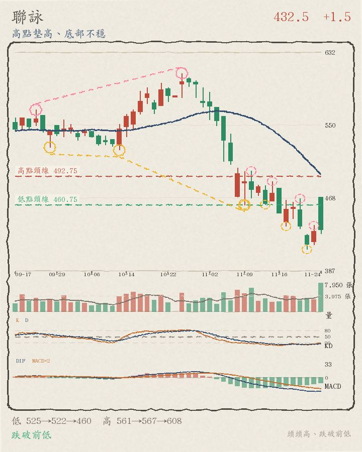
今天帶量收紅、跌破月線 494.95，跌破前一個轉折低點（高點頸線 608 還在收盤上方），高點還在墊高（但底部沒同步墊高）。
- 月線位置：收盤 435.5 在月線 494.95 之下；5 日線 435.5 也在月線之下（短均在下）；月線走平或向下、5 日線走平或向下
- 量能：成交量是 20 日均量的 2.97 倍，比 20 日均量大不少；收紅又量增，量價配合
- 關鍵價位：高點頸線 608 還沒突破、還在收盤上方 28.4%；最近轉折高點 608（低於 28.4%）；最近轉折低點 460.5（低於 5.4%）
- 轉折結構：高點 561、567、608 墊高 8.4%（頭頭高），但低點 525、522、460.5 沒有同步墊高；還沒確認的轉折低點 11-17 436.5、11-20 410.5；還沒確認的轉折高點 11-19 467.5、11-24 469（圖上虛線小圈）
區間或轉弱 成交金額 49.11 億・全榜第 14 名（上市第 13 名）
好條件 3/4：在月線之下、月線下彎、外資買超
不好條件 1/5：量價攻擊（收紅＋大量）

今天帶量收紅、跌破月線 109.87，離高點頸線 117.5 還差 11.1%，轉折還沒走出明顯方向。
- 月線位置：收盤 104.5 在月線 109.87 之下；5 日線 101.98 也在月線之下（短均在下）；月線走平或向下、5 日線走平或向下
- 量能：成交量是 20 日均量的 1.53 倍，比 20 日均量大不少；收紅又量增，量價配合
- 關鍵價位：高點頸線 117.5 還沒突破，差 11.1%；最近轉折高點 115.5（低於 9.5%）；最近轉折低點 101（高於 3.5%）
- 轉折結構：低點 110、110、101 與高點 117.5、117.5、115.5 都沒有明顯遞增，屬於區間震盪或轉弱；還沒確認的轉折低點 11-17 106、11-23 91.5；還沒確認的轉折高點 11-09 113.5、11-24 104.5（圖上虛線小圈）
區間或轉弱 成交金額 48.73 億・全榜第 16 名（上市第 14 名）
好條件 3/4：在月線之下、月線下彎、外資買超
不好條件 1/5：量價攻擊（收紅＋大量）

今天帶量收紅、跌破月線 73.845，離高點頸線 80.6 還差 13.3%，轉折還沒走出明顯方向。
- 月線位置：收盤 69.9 在月線 73.845 之下；5 日線 69.64 也在月線之下（短均在下）；月線走平或向下、5 日線走平或向下
- 量能：成交量是 20 日均量的 1.30 倍，比 20 日均量大不少；收紅又量增，量價配合
- 關鍵價位：高點頸線 80.6 還沒突破，差 13.3%；最近轉折高點 80.6（低於 13.3%）；最近轉折低點 67.5（高於 3.6%）
- 轉折結構：低點 67.3、73.8、67.5 與高點 76.4、76.2、80.6 都沒有明顯遞增，屬於區間震盪或轉弱；還沒確認的轉折低點 11-11 72.6、11-23 61.5；還沒確認的轉折高點 11-24 70.1（圖上虛線小圈）
區間或轉弱 成交金額 44.02 億・全榜第 17 名（上市第 15 名）
好條件 2/4：在月線之下、月線下彎
不好條件 1/5：外資賣超
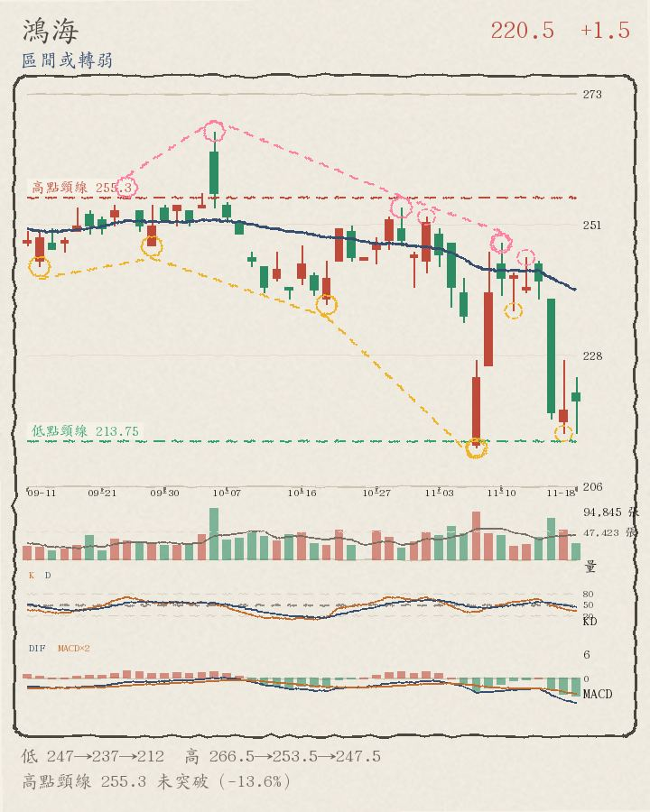
今天收紅、但成交量比平均少、跌破月線 233.3，離高點頸線 266.5 還差 15.0%，轉折還沒走出明顯方向。
- 月線位置：收盤 226.5 在月線 233.3 之下；5 日線 216.8 也在月線之下（短均在下）；月線走平或向下、5 日線走平或向下
- 量能：成交量是 20 日均量的 0.39 倍，比 20 日均量少很多；收紅但量縮，量價背離
- 關鍵價位：高點頸線 266.5 還沒突破，差 15.0%；最近轉折高點 247.5（低於 8.5%）；最近轉折低點 212.5（高於 6.6%）
- 轉折結構：低點 247、237、212.5 與高點 266.5、253.5、247.5 都沒有明顯遞增，屬於區間震盪或轉弱；還沒確認的轉折低點 11-18 215、11-23 205；還沒確認的轉折高點 11-19 225.5、11-24 226.5（圖上虛線小圈）
高點墊高、底部不穩 成交金額 42.06 億・全榜第 18 名（上市第 16 名）
好條件 0/4：無
不好條件 4/5：站上月線、月線向上、量價攻擊（收紅＋大量）、外資賣超

今天帶量收紅、站上月線 45.28，離高點頸線 48.95 還差 0.7%，高點還在墊高（但底部沒同步墊高）。
- 月線位置：收盤 48.6 在月線 45.28 之上；5 日線 46.13 也在月線之上（短均在上）；月線向上、5 日線走平或向下
- 量能：成交量是 20 日均量的 3.08 倍，比 20 日均量大不少；收紅又量增，量價配合
- 關鍵價位：高點頸線 48.95 還沒突破，差 0.7%；最近轉折高點 48.95（低於 0.7%）；最近轉折低點 42（高於 15.7%）
- 轉折結構：高點 44.05、46.75、48.95 墊高 11.1%（頭頭高），但低點 41.8、42.05、42 沒有同步墊高；還沒確認的轉折低點 11-18 45.7、11-23 43.3；還沒確認的轉折高點 11-18 48.65、11-24 48.6（圖上虛線小圈）
區間或轉弱 成交金額 40.19 億・全榜第 19 名（上市第 17 名）
好條件 2/4：在月線之下、月線下彎
不好條件 1/5：外資賣超

今天收紅、但成交量比平均少、跌破月線 100.105，離高點頸線 168.5 還差 42.4%，轉折還沒走出明顯方向。
- 月線位置：收盤 97.1 在月線 100.105 之下；5 日線 89.38 也在月線之下（短均在下）；月線走平或向下、5 日線走平或向下
- 量能：成交量是 20 日均量的 0.25 倍，比 20 日均量少很多；收紅但量縮，量價背離
- 關鍵價位：高點頸線 168.5 還沒突破，差 42.4%；最近轉折高點 107.5（低於 9.7%）；最近轉折低點 88.6（高於 9.6%）
- 轉折結構：低點 135、151.5、88.6 與高點 168.5、165、107.5 都沒有明顯遞增，屬於區間震盪或轉弱；還沒確認的轉折低點 11-20 79.4；還沒確認的轉折高點 11-24 97.1（圖上虛線小圈）
上升趨勢（底底高＋頭頭高） 成交金額 39.69 億・全榜第 20 名（上市第 18 名）
好條件 0/4：無
不好條件 3/5：站上月線、月線向上、外資賣超
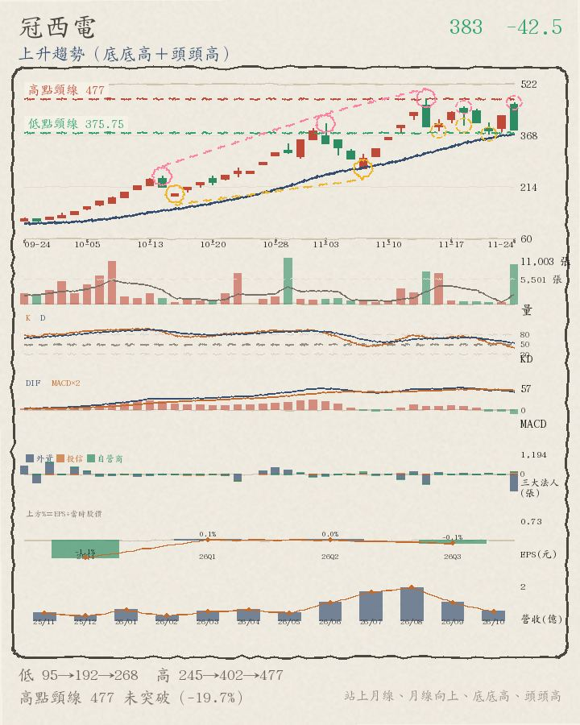
今天帶量收黑、站上月線 371.525，離高點頸線 477 還差 19.7%，轉折結構仍是底底高＋頭頭高。
- 月線位置：收盤 383 在月線 371.525 之上；5 日線 407.2 也在月線之上（短均在上）；月線向上、5 日線走平或向下
- 量能：成交量是 20 日均量的 4.33 倍，比 20 日均量大不少；收黑卻量增，量價背離
- 關鍵價位：高點頸線 477 還沒突破，差 19.7%；最近轉折高點 477（低於 19.7%）；最近轉折低點 268（高於 42.9%）
- 轉折結構：低點 94.7、192.5、268 一路墊高 183.0%、高點 245、402、477 也一路墊高 94.7%，是底底高＋頭頭高；還沒確認的轉折低點 11-18 397.5、11-20 371；還沒確認的轉折高點 11-18 452、11-24 466（圖上虛線小圈）
區間或轉弱 成交金額 38.05 億・全榜第 21 名（上市第 19 名）
好條件 3/4：在月線之下、月線下彎、外資買超
不好條件 1/5：量價攻擊（收紅＋大量）

今天帶量收紅、跌破月線 152.625，離高點頸線 164 還差 12.5%，轉折還沒走出明顯方向。
- 月線位置：收盤 143.5 在月線 152.625 之下；5 日線 141.5 也在月線之下（短均在下）；月線走平或向下、5 日線走平或向下
- 量能：成交量是 20 日均量的 1.08 倍，比 20 日均量大一些；收紅又量增，量價配合
- 關鍵價位：高點頸線 164 還沒突破，差 12.5%；最近轉折高點 163.5（低於 12.2%）；最近轉折低點 140（高於 2.5%）
- 轉折結構：低點 147.5、153.5、140 與高點 164、164、163.5 都沒有明顯遞增，屬於區間震盪或轉弱；還沒確認的轉折低點 11-17 145、11-23 125；還沒確認的轉折高點 11-24 143.5（圖上虛線小圈）
區間或轉弱 成交金額 35.52 億・全榜第 22 名（上市第 20 名）
好條件 2/4：在月線之下、月線下彎
不好條件 1/5：外資賣超
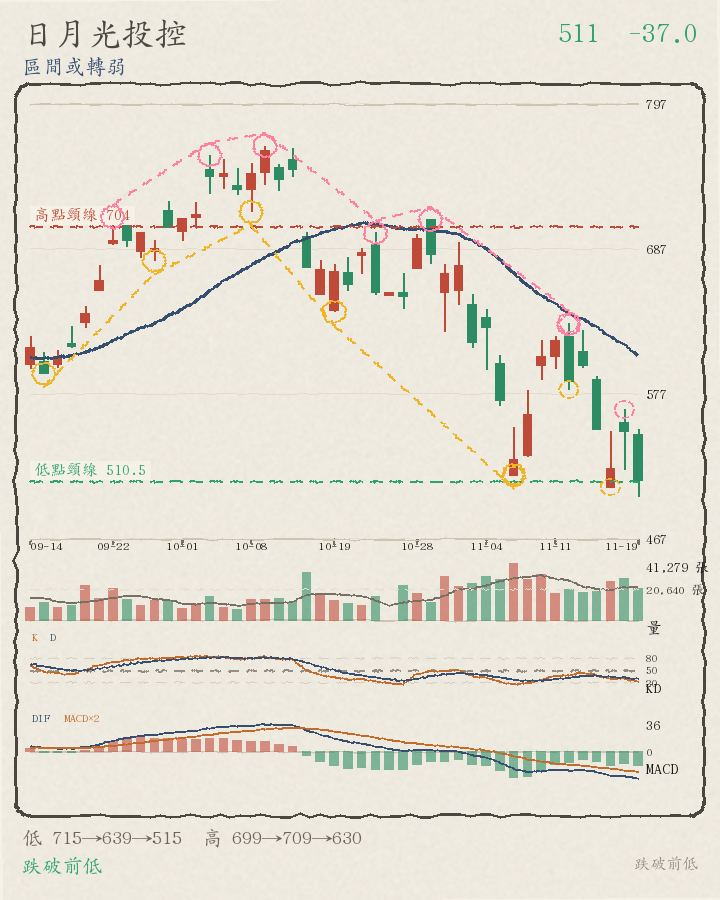
今天收紅、但成交量比平均少、跌破月線 581，離高點頸線 709 還差 25.2%，轉折還沒走出明顯方向。
- 月線位置：收盤 530 在月線 581 之下；5 日線 504.2 也在月線之下（短均在下）；月線走平或向下、5 日線走平或向下
- 量能：成交量是 20 日均量的 0.25 倍，比 20 日均量少很多；收紅但量縮，量價背離
- 關鍵價位：高點頸線 709 還沒突破，差 25.2%；最近轉折高點 630（低於 15.9%）；最近轉折低點 515（高於 2.9%）
- 轉折結構：低點 715、639、515 與高點 699、709、630 都沒有明顯遞增，屬於區間震盪或轉弱；還沒確認的轉折低點 11-17 506、11-23 451；還沒確認的轉折高點 11-18 565、11-24 530（圖上虛線小圈）
區間或轉弱 成交金額 34.82 億・全榜第 23 名（上市第 21 名）
好條件 2/4：在月線之下、月線下彎
不好條件 2/5：量價攻擊（收紅＋大量）、外資賣超

今天帶量收紅、跌破月線 41.735，離高點頸線 44.8 還差 11.2%，轉折還沒走出明顯方向。
- 月線位置：收盤 39.8 在月線 41.735 之下；5 日線 39.24 也在月線之下（短均在下）；月線走平或向下、5 日線走平或向下
- 量能：成交量是 20 日均量的 2.75 倍，比 20 日均量大不少；收紅又量增，量價配合
- 關鍵價位：高點頸線 44.8 還沒突破，差 11.2%；最近轉折高點 43.95（低於 9.4%）；最近轉折低點 38.8（高於 2.6%）
- 轉折結構：低點 37.95、40.45、38.8 與高點 42.1、44.8、43.95 都沒有明顯遞增，屬於區間震盪或轉弱；還沒確認的轉折低點 11-23 36.2；還沒確認的轉折高點 11-09 41.7、11-24 41.4（圖上虛線小圈）
上升趨勢（底底高＋頭頭高） 成交金額 31.66 億・全榜第 24 名（上市第 22 名）
好條件 0/4：無
不好條件 4/5：站上月線、月線向上、量價攻擊（收紅＋大量）、外資賣超

今天帶量收紅、站上月線 63.855，離高點頸線 82.1 還差 19.1%，轉折結構仍是底底高＋頭頭高。
- 月線位置：收盤 66.4 在月線 63.855 之上；5 日線 65.9 也在月線之上（短均在上）；月線向上、5 日線走平或向下
- 量能：成交量是 20 日均量的 1.18 倍，比 20 日均量大不少；收紅又量增，量價配合
- 關鍵價位：高點頸線 82.1 還沒突破，差 19.1%；最近轉折高點 82.1（低於 19.1%）；最近轉折低點 53.1（高於 25.0%）
- 轉折結構：低點 40.5、49.6、53.1 一路墊高 31.1%、高點 34.2、49.45、82.1 也一路墊高 140.1%，是底底高＋頭頭高；還沒確認的轉折低點 11-20 59.5；還沒確認的轉折高點 11-11 71.2、11-23 74.6（圖上虛線小圈）
區間或轉弱 成交金額 29.78 億・全榜第 25 名（上市第 23 名）
好條件 3/4：跌破前低、在月線之下、月線下彎
不好條件 2/5：量價攻擊（收紅＋大量）、外資賣超

今天帶量收紅、跌破月線 109.36，跌破前一個轉折低點（高點頸線 120.5 還在收盤上方），轉折還沒走出明顯方向。
- 月線位置：收盤 97.1 在月線 109.36 之下；5 日線 100.54 也在月線之下（短均在下）；月線走平或向下、5 日線走平或向下
- 量能：成交量是 20 日均量的 2.22 倍，比 20 日均量大不少；收紅又量增，量價配合
- 關鍵價位：高點頸線 120.5 還沒突破、還在收盤上方 19.4%；最近轉折高點 117（低於 17.0%）；最近轉折低點 102（低於 4.8%）
- 轉折結構：低點 110、113.5、102 與高點 120.5、120.5、117 都沒有明顯遞增，屬於區間震盪或轉弱；還沒確認的轉折低點 11-17 106.5、11-23 91.4；還沒確認的轉折高點 11-18 111.5、11-24 103（圖上虛線小圈）
區間或轉弱 成交金額 29.19 億・全榜第 26 名（上市第 24 名）
好條件 2/4：在月線之下、月線下彎
不好條件 2/5：量價攻擊（收紅＋大量）、外資賣超

今天帶量收紅、跌破月線 67.1，離高點頸線 89.4 還差 31.9%，轉折還沒走出明顯方向。
- 月線位置：收盤 60.9 在月線 67.1 之下；5 日線 59.72 也在月線之下（短均在下）；月線走平或向下、5 日線走平或向下
- 量能：成交量是 20 日均量的 1.46 倍，比 20 日均量大不少；收紅又量增，量價配合
- 關鍵價位：高點頸線 89.4 還沒突破，差 31.9%；最近轉折高點 73.2（低於 16.8%）；最近轉折低點 58.9（高於 3.4%）
- 轉折結構：低點 62、73.5、58.9 與高點 71.2、89.4、73.2 都沒有明顯遞增，屬於區間震盪或轉弱；還沒確認的轉折低點 11-11 67.9、11-23 54.3；還沒確認的轉折高點 11-18 69.4、11-24 62.4（圖上虛線小圈）
區間或轉弱 成交金額 27.3 億・全榜第 28 名（上市第 25 名）
好條件 3/4：跌破前低、在月線之下、月線下彎
不好條件 1/5：外資賣超

今天收紅、但成交量比平均少、跌破月線 216.025，跌破前一個轉折低點（高點頸線 310 還在收盤上方），轉折還沒走出明顯方向。
- 月線位置：收盤 172.5 在月線 216.025 之下；5 日線 171.2 也在月線之下（短均在下）；月線走平或向下、5 日線走平或向下
- 量能：成交量是 20 日均量的 0.68 倍，比 20 日均量少很多；收紅但量縮，量價背離
- 關鍵價位：高點頸線 310 還沒突破、還在收盤上方 44.4%；最近轉折高點 235（低於 26.6%）；最近轉折低點 201（低於 14.2%）
- 轉折結構：低點 284、255、201 與高點 310、284.5、235 都沒有明顯遞增，屬於區間震盪或轉弱；還沒確認的轉折低點 11-17 173.5、11-23 146；還沒確認的轉折高點 11-18 194、11-24 172.5（圖上虛線小圈）
高點墊高、底部不穩 成交金額 26.36 億・全榜第 29 名（上市第 26 名）
好條件 0/4：無
不好條件 4/5：站上月線、月線向上、量價攻擊（收紅＋大量）、外資賣超

今天帶量收紅、站上月線 49.855，離高點頸線 59.3 還差 8.9%，高點還在墊高（但底部沒同步墊高）。
- 月線位置：收盤 54 在月線 49.855 之上；5 日線 54.3 也在月線之上（短均在上）；月線向上、5 日線向上
- 量能：成交量是 20 日均量的 2.76 倍，比 20 日均量大不少；收紅又量增，量價配合
- 關鍵價位：高點頸線 59.3 還沒突破，差 8.9%；最近轉折高點 59.3（低於 8.9%）；最近轉折低點 41.9（高於 28.9%）
- 轉折結構：高點 48.3、52.6、59.3 墊高 22.8%（頭頭高），但低點 40.35、41.9、41.9 沒有同步墊高；還沒確認的轉折低點 11-12 49.05、11-23 49.75；還沒確認的轉折高點 11-24 56.8（圖上虛線小圈）
區間或轉弱 成交金額 25.55 億・全榜第 30 名（上市第 27 名）
好條件 3/4：跌破前低、在月線之下、月線下彎
不好條件 2/5：量價攻擊（收紅＋大量）、外資賣超
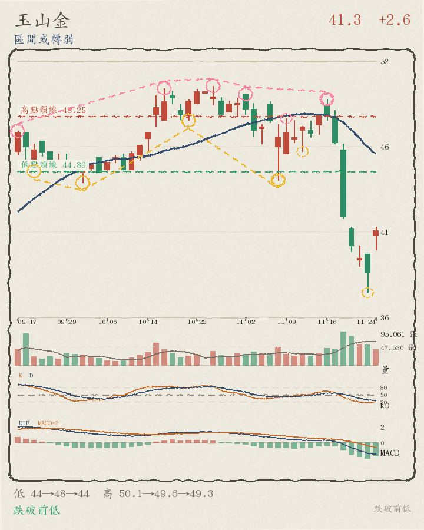
今天帶量收紅、跌破月線 45.967，跌破前一個轉折低點（高點頸線 50.1 還在收盤上方），轉折還沒走出明顯方向。
- 月線位置：收盤 41.2 在月線 45.967 之下；5 日線 40.4 也在月線之下（短均在下）；月線走平或向下、5 日線走平或向下
- 量能：成交量是 20 日均量的 1.49 倍，比 20 日均量大不少；收紅又量增，量價配合
- 關鍵價位：高點頸線 50.1 還沒突破、還在收盤上方 17.8%；最近轉折高點 49.3（低於 16.4%）；最近轉折低點 44.35（低於 7.1%）
- 轉折結構：低點 44.2、48、44.35 與高點 50.1、49.6、49.3 都沒有明顯遞增，屬於區間震盪或轉弱；還沒確認的轉折低點 11-11 46.1、11-23 37.5；還沒確認的轉折高點 11-09 48.1、11-24 41.5（圖上虛線小圈）
區間或轉弱 成交金額 24.91 億・全榜第 31 名（上市第 28 名）
好條件 2/4：在月線之下、月線下彎
不好條件 1/5：外資賣超
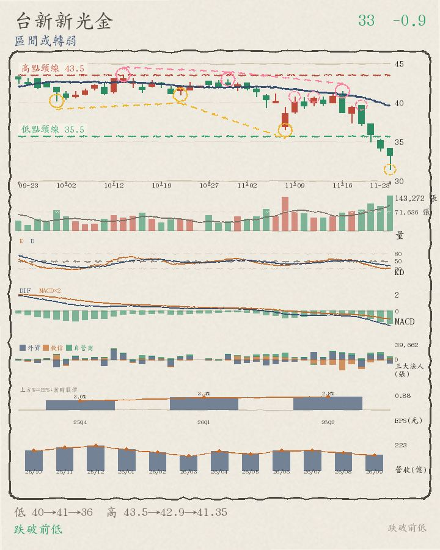
今天收紅、但成交量比平均少、跌破月線 39.133，離高點頸線 43.5 還差 16.6%，轉折還沒走出明顯方向。
- 月線位置：收盤 36.3 在月線 39.133 之下；5 日線 35.21 也在月線之下（短均在下）；月線走平或向下、5 日線走平或向下
- 量能：成交量是 20 日均量的 0.94 倍，比 20 日均量少一些；收紅但量縮，量價背離
- 關鍵價位：高點頸線 43.5 還沒突破，差 16.6%；最近轉折高點 41.35（低於 12.2%）；最近轉折低點 36.3（高於 0.0%）
- 轉折結構：低點 40.1、40.9、36.3 與高點 43.5、42.9、41.35 都沒有明顯遞增，屬於區間震盪或轉弱；還沒確認的轉折低點 11-23 31.15；還沒確認的轉折高點 11-18 39.55、11-24 36.3（圖上虛線小圈）
區間或轉弱 成交金額 24.82 億・全榜第 32 名（上市第 29 名）
好條件 2/4：在月線之下、月線下彎
不好條件 2/5：量價攻擊（收紅＋大量）、外資賣超
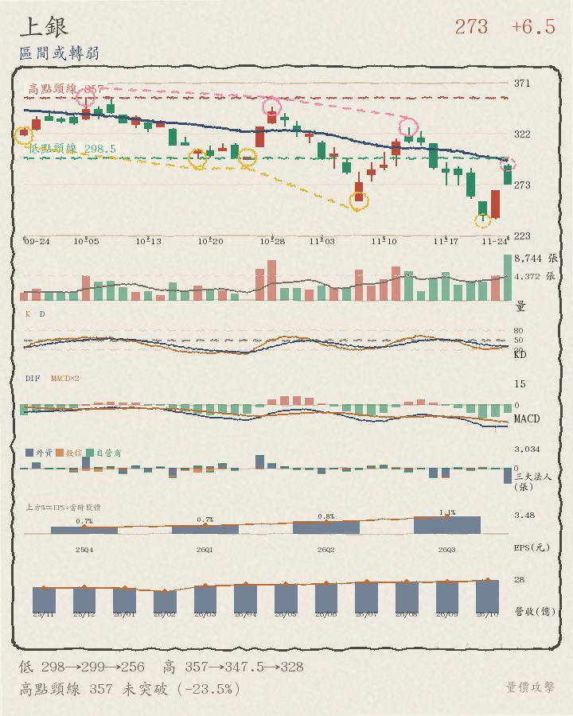
今天帶量收紅、跌破月線 295.4，離高點頸線 357 還差 23.5%，轉折還沒走出明顯方向。
- 月線位置：收盤 273 在月線 295.4 之下；5 日線 265.1 也在月線之下（短均在下）；月線走平或向下、5 日線走平或向下
- 量能：成交量是 20 日均量的 2.27 倍，比 20 日均量大不少；收紅又量增，量價配合
- 關鍵價位：高點頸線 357 還沒突破，差 23.5%；最近轉折高點 328（低於 16.8%）；最近轉折低點 256.5（高於 6.4%）
- 轉折結構：低點 298、299、256.5 與高點 357、347.5、328 都沒有明顯遞增，屬於區間震盪或轉弱；還沒確認的轉折低點 11-20 237.5；還沒確認的轉折高點 11-24 292（圖上虛線小圈）
區間或轉弱 成交金額 22.53 億・全榜第 34 名（上市第 30 名）
好條件 1/4：外資買超
不好條件 3/5：站上月線、月線向上、量價攻擊（收紅＋大量）
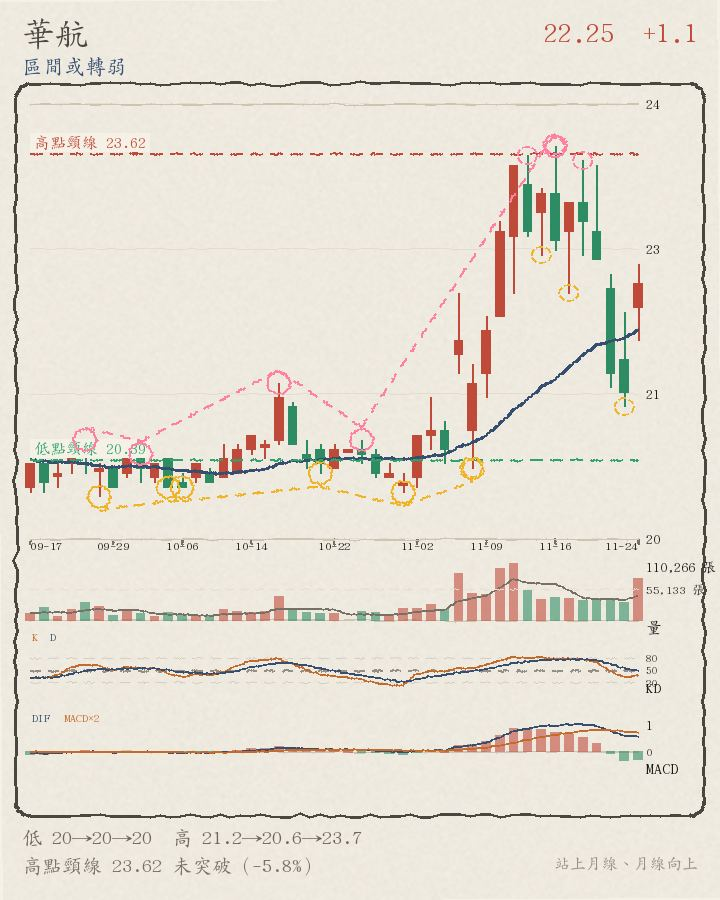
今天帶量收紅、站上月線 21.775，離高點頸線 23.7 還差 5.1%，轉折還沒走出明顯方向。
- 月線位置：收盤 22.5 在月線 21.775 之上；5 日線 22.06 也在月線之上（短均在上）；月線向上、5 日線走平或向下
- 量能：成交量是 20 日均量的 2.33 倍，比 20 日均量大不少；收紅又量增，量價配合
- 關鍵價位：高點頸線 23.7 還沒突破，差 5.1%；最近轉折高點 23.7（低於 5.1%）；最近轉折低點 20.3（高於 10.8%）
- 轉折結構：低點 20.25、20.05、20.3 與高點 21.2、20.6、23.7 都沒有明顯遞增，屬於區間震盪或轉弱；還沒確認的轉折低點 11-17 22.15、11-23 20.95；還沒確認的轉折高點 11-18 23.55、11-24 22.5（圖上虛線小圈）
區間或轉弱 成交金額 22.15 億・全榜第 35 名（上市第 31 名）
好條件 2/4：在月線之下、月線下彎
不好條件 2/5：量價攻擊（收紅＋大量）、外資賣超

今天帶量收紅、跌破月線 59.435，離高點頸線 64.6 還差 12.8%，轉折還沒走出明顯方向。
- 月線位置：收盤 56.3 在月線 59.435 之下；5 日線 56.32 也在月線之下（短均在下）；月線走平或向下、5 日線走平或向下
- 量能：成交量是 20 日均量的 2.28 倍，比 20 日均量大不少；收紅又量增，量價配合
- 關鍵價位：高點頸線 64.6 還沒突破，差 12.8%；最近轉折高點 62.8（低於 10.4%）；最近轉折低點 54.9（高於 2.6%）
- 轉折結構：低點 58.3、61.2、54.9 與高點 63.5、64.6、62.8 都沒有明顯遞增，屬於區間震盪或轉弱；還沒確認的轉折低點 11-17 58.4、11-23 52.1；還沒確認的轉折高點 11-16 61.6、11-24 58.4（圖上虛線小圈）
高點墊高、底部不穩 成交金額 21.67 億・全榜第 36 名（上市第 32 名）
好條件 0/4：無
不好條件 5/5：站上月線、月線向上、突破頸線、量價攻擊（收紅＋大量）、外資賣超
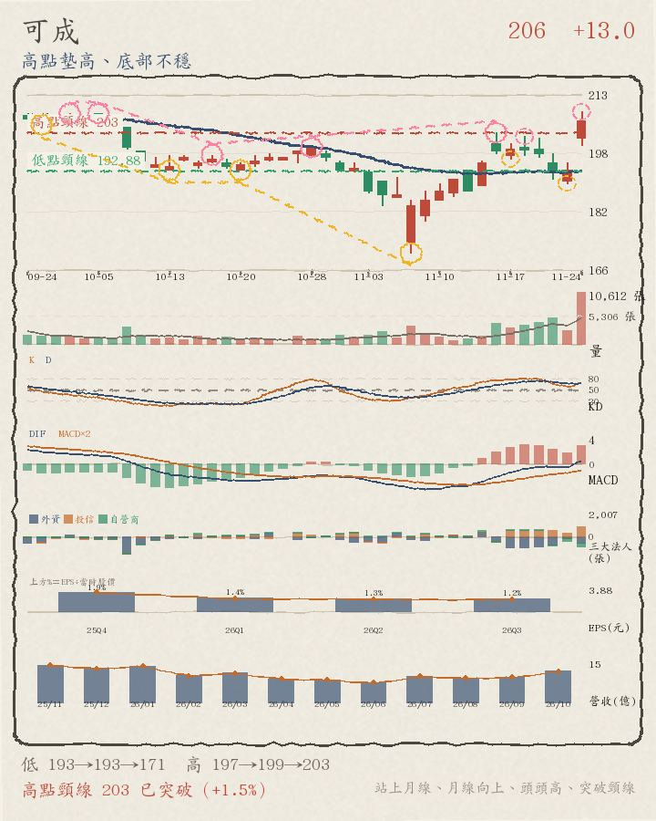
今天帶量收紅、站上月線 192.8，已站上高點頸線 203，高點還在墊高（但底部沒同步墊高）。
- 月線位置：收盤 206 在月線 192.8 之上；5 日線 197.6 也在月線之上（短均在上）；月線向上、5 日線向上
- 量能：成交量是 20 日均量的 4.65 倍，比 20 日均量大不少；收紅又量增，量價配合
- 關鍵價位：高點頸線 203 已站上；最近轉折高點 203（高於 1.5%）；最近轉折低點 171（高於 20.5%）
- 轉折結構：高點 197、199、203 墊高 3.0%（頭頭高），但低點 193、193、171 沒有同步墊高；還沒確認的轉折低點 11-17 196、11-23 189.5；還沒確認的轉折高點 11-18 202、11-24 208.5（圖上虛線小圈）
底部墊高、未過前高 成交金額 21.54 億・全榜第 37 名（上市第 33 名）
好條件 1/4：月線下彎
不好條件 3/5：站上月線、量價攻擊（收紅＋大量）、外資賣超

今天帶量收紅、站上月線 53.68，離高點頸線 56.5 還差 2.7%，底部還在墊高（但高點沒同步創高）。
- 月線位置：收盤 55 在月線 53.68 之上；5 日線 52.56 也在月線之下（短均在下）；月線走平或向下、5 日線走平或向下
- 量能：成交量是 20 日均量的 1.23 倍，比 20 日均量大不少；收紅又量增，量價配合
- 關鍵價位：高點頸線 56.5 還沒突破，差 2.7%；最近轉折高點 56.5（低於 2.7%）；最近轉折低點 50.4（高於 9.1%）
- 轉折結構：低點 48.35、49、50.4 墊高 4.2%（底底高），但高點 56、56、56.5 沒有同步創高；還沒確認的轉折低點 11-18 52、11-23 49.65；還沒確認的轉折高點 11-16 56.3、11-24 55（圖上虛線小圈）
區間或轉弱 成交金額 20.9 億・全榜第 38 名（上市第 34 名）
好條件 2/4：月線下彎、外資買超
不好條件 2/5：站上月線、量價攻擊（收紅＋大量）

今天帶量收紅、站上月線 102.465，離高點頸線 108 還差 4.2%，轉折還沒走出明顯方向。
- 月線位置：收盤 103.5 在月線 102.465 之上；5 日線 98.58 也在月線之下（短均在下）；月線走平或向下、5 日線走平或向下
- 量能：成交量是 20 日均量的 2.25 倍，比 20 日均量大不少；收紅又量增，量價配合
- 關鍵價位：高點頸線 108 還沒突破，差 4.2%；最近轉折高點 106（低於 2.4%）；最近轉折低點 98.1（高於 5.5%）
- 轉折結構：低點 105.5、105.5、98.1 與高點 108、106、106 都沒有明顯遞增，屬於區間震盪或轉弱；還沒確認的轉折低點 11-17 97.9、11-20 93.8；還沒確認的轉折高點 11-19 100.5、11-24 103.5（圖上虛線小圈）
區間或轉弱 成交金額 20.61 億・全榜第 39 名（上市第 35 名）
好條件 1/4：月線下彎
不好條件 3/5：站上月線、量價攻擊（收紅＋大量）、外資賣超
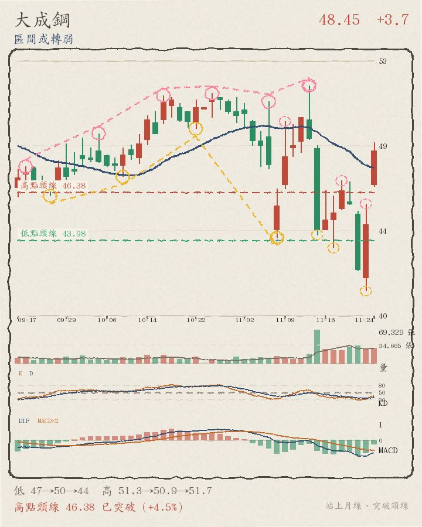
今天帶量收紅、站上月線 47.575，離高點頸線 51.7 還差 6.9%，轉折還沒走出明顯方向。
- 月線位置：收盤 48.15 在月線 47.575 之上；5 日線 45.53 也在月線之下（短均在下）；月線走平或向下、5 日線走平或向下
- 量能：成交量是 20 日均量的 2.26 倍，比 20 日均量大不少；收紅又量增，量價配合
- 關鍵價位：高點頸線 51.7 還沒突破，差 6.9%；最近轉折高點 51.7（低於 6.9%）；最近轉折低點 44.1（高於 9.2%）
- 轉折結構：低點 47.15、49.55、44.1 與高點 51.3、50.9、51.7 都沒有明顯遞增，屬於區間震盪或轉弱；還沒確認的轉折低點 11-17 43.6、11-23 41.45；還沒確認的轉折高點 11-18 46.95、11-24 48.9（圖上虛線小圈）
區間或轉弱 成交金額 19.38 億・全榜第 40 名（上市第 36 名）
好條件 2/4：在月線之下、月線下彎
不好條件 2/5：量價攻擊（收紅＋大量）、外資賣超
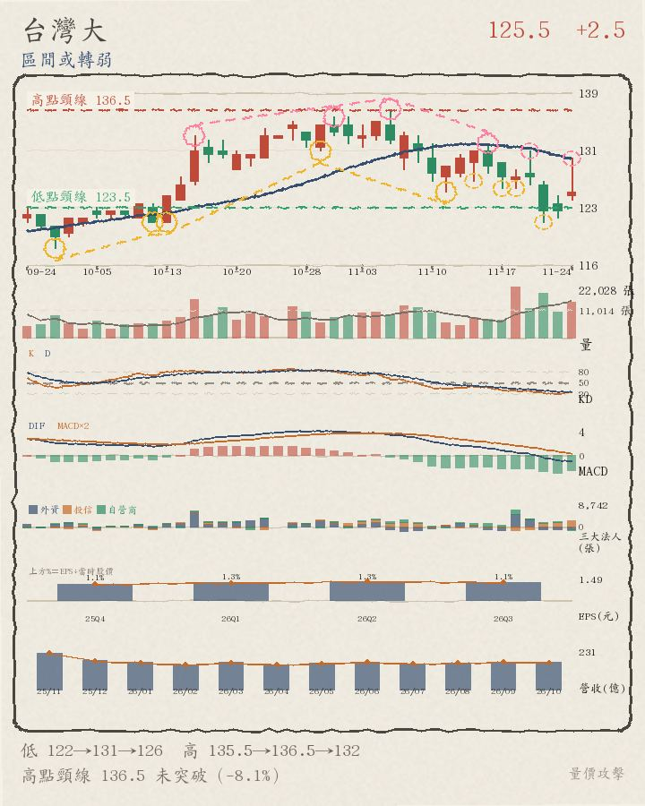
今天帶量收紅、跌破月線 129.95，離高點頸線 136.5 還差 8.1%，轉折還沒走出明顯方向。
- 月線位置：收盤 125.5 在月線 129.95 之下；5 日線 125.3 也在月線之下（短均在下）；月線走平或向下、5 日線走平或向下
- 量能：成交量是 20 日均量的 1.40 倍，比 20 日均量大不少；收紅又量增，量價配合
- 關鍵價位：高點頸線 136.5 還沒突破，差 8.1%；最近轉折高點 132（低於 4.9%）；最近轉折低點 125.5（高於 0.0%）
- 轉折結構：低點 121.5、131、125.5 與高點 135.5、136.5、132 都沒有明顯遞增，屬於區間震盪或轉弱；還沒確認的轉折低點 11-18 126、11-20 121.5；還沒確認的轉折高點 11-19 131、11-24 130（圖上虛線小圈）
區間或轉弱 成交金額 18.47 億・全榜第 41 名（上市第 37 名）
好條件 2/4：在月線之下、月線下彎
不好條件 1/5：外資賣超

今天收紅、但成交量比平均少、跌破月線 271.25，離高點頸線 325.5 還差 23.5%，轉折還沒走出明顯方向。
- 月線位置：收盤 249 在月線 271.25 之下；5 日線 232.7 也在月線之下（短均在下）；月線走平或向下、5 日線走平或向下
- 量能：成交量是 20 日均量的 0.07 倍，比 20 日均量少很多；收紅但量縮，量價背離
- 關鍵價位：高點頸線 325.5 還沒突破，差 23.5%；最近轉折高點 325.5（低於 23.5%）；最近轉折低點 224.5（高於 10.9%）
- 轉折結構：低點 223、295、224.5 與高點 325.5、325、325.5 都沒有明顯遞增，屬於區間震盪或轉弱；還沒確認的轉折低點 11-23 196；還沒確認的轉折高點 11-18 280、11-24 249（圖上虛線小圈）
區間或轉弱 成交金額 17.53 億・全榜第 42 名（上市第 38 名）
好條件 2/4：在月線之下、月線下彎
不好條件 2/5：量價攻擊（收紅＋大量）、外資賣超
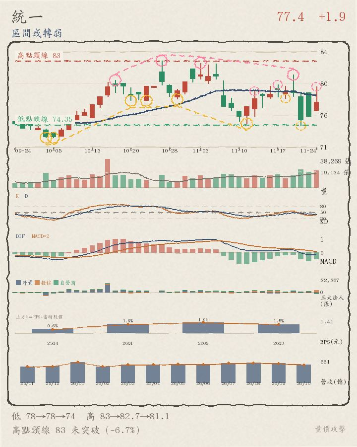
今天帶量收紅、跌破月線 78.325，離高點頸線 83 還差 6.7%，轉折還沒走出明顯方向。
- 月線位置：收盤 77.4 在月線 78.325 之下；5 日線 77.08 也在月線之下（短均在下）；月線走平或向下、5 日線走平或向下
- 量能：成交量是 20 日均量的 1.55 倍，比 20 日均量大不少；收紅又量增，量價配合
- 關鍵價位：高點頸線 83 還沒突破，差 6.7%；最近轉折高點 81.1（低於 4.6%）；最近轉折低點 74.5（高於 3.9%）
- 轉折結構：低點 77.6、77.8、74.5 與高點 83、82.7、81.1 都沒有明顯遞增，屬於區間震盪或轉弱；還沒確認的轉折低點 11-18 77.9、11-20 74.2；還沒確認的轉折高點 11-17 79.8、11-24 79.5（圖上虛線小圈）
區間或轉弱 成交金額 17.26 億・全榜第 44 名（上市第 39 名）
好條件 2/4：在月線之下、月線下彎
不好條件 1/5：外資賣超
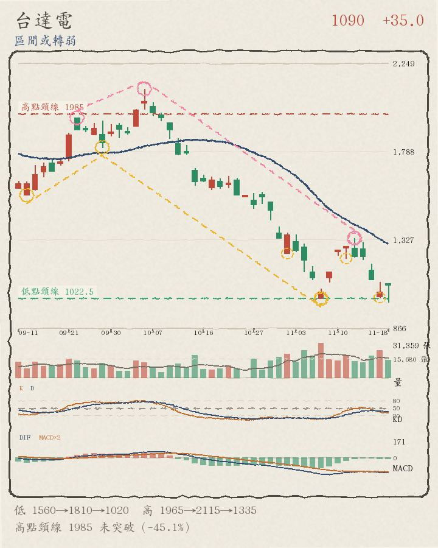
今天收紅、但成交量比平均少、跌破月線 1190.75，離高點頸線 2115 還差 48.7%，轉折還沒走出明顯方向。
- 月線位置：收盤 1085 在月線 1190.75 之下；5 日線 1007 也在月線之下（短均在下）；月線走平或向下、5 日線走平或向下
- 量能：成交量是 20 日均量的 0.06 倍，比 20 日均量少很多；收紅但量縮，量價背離
- 關鍵價位：高點頸線 2115 還沒突破，差 48.7%；最近轉折高點 1335（低於 18.7%）；最近轉折低點 1020（高於 6.4%）
- 轉折結構：低點 1560、1810、1020 與高點 1965、2115、1335 都沒有明顯遞增，屬於區間震盪或轉弱；還沒確認的轉折低點 11-11 1230、11-23 864；還沒確認的轉折高點 11-19 1115、11-24 1085（圖上虛線小圈）
區間或轉弱 成交金額 17.08 億・全榜第 45 名（上市第 40 名）
好條件 3/4：跌破前低、在月線之下、月線下彎
不好條件 2/5：量價攻擊（收紅＋大量）、外資賣超

今天帶量收紅、跌破月線 188.35，跌破前一個轉折低點（高點頸線 223.5 還在收盤上方），轉折還沒走出明顯方向。
- 月線位置：收盤 172.5 在月線 188.35 之下；5 日線 169.3 也在月線之下（短均在下）；月線走平或向下、5 日線走平或向下
- 量能：成交量是 20 日均量的 1.16 倍，比 20 日均量大不少；收紅又量增，量價配合
- 關鍵價位：高點頸線 223.5 還沒突破、還在收盤上方 22.8%；最近轉折高點 219.5（低於 21.4%）；最近轉折低點 176（低於 2.0%）
- 轉折結構：低點 203、201、176 與高點 209.5、223.5、219.5 都沒有明顯遞增，屬於區間震盪或轉弱；還沒確認的轉折低點 11-17 172、11-23 155；還沒確認的轉折高點 11-18 181、11-24 176.5（圖上虛線小圈）
區間或轉弱 成交金額 16.42 億・全榜第 46 名（上市第 41 名）
好條件 2/4：在月線之下、月線下彎
不好條件 1/5：外資賣超

今天收紅、但成交量比平均少、跌破月線 185.55，離高點頸線 231.5 還差 23.1%，轉折還沒走出明顯方向。
- 月線位置：收盤 178 在月線 185.55 之下；5 日線 171.9 也在月線之下（短均在下）；月線走平或向下、5 日線走平或向下
- 量能：成交量是 20 日均量的 0.78 倍，比 20 日均量少很多；收紅但量縮，量價背離
- 關鍵價位：高點頸線 231.5 還沒突破，差 23.1%；最近轉折高點 211.5（低於 15.8%）；最近轉折低點 154.5（高於 15.2%）
- 轉折結構：低點 188、186.5、154.5 與高點 211、231.5、211.5 都沒有明顯遞增，屬於區間震盪或轉弱；還沒確認的轉折低點 11-23 147.5；還沒確認的轉折高點 11-18 192.5、11-24 183（圖上虛線小圈）
區間或轉弱 成交金額 15.95 億・全榜第 47 名（上市第 42 名）
好條件 3/4：跌破前低、在月線之下、月線下彎
不好條件 2/5：量價攻擊（收紅＋大量）、外資賣超
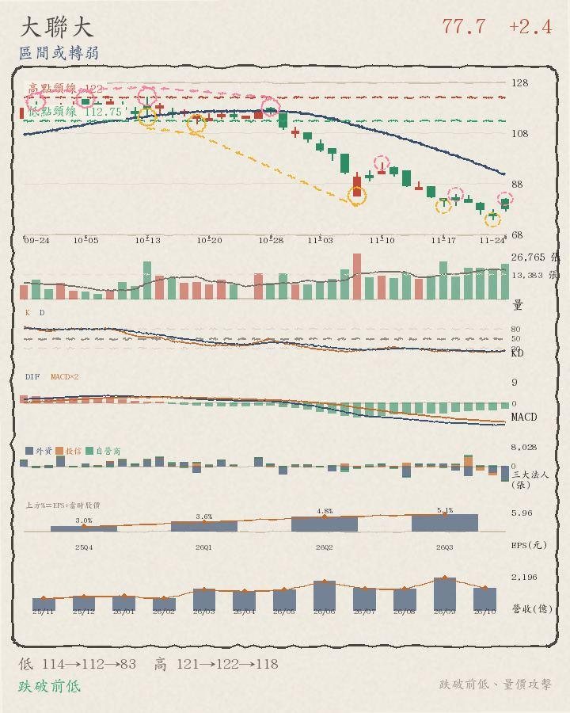
今天帶量收紅、跌破月線 91.33，跌破前一個轉折低點（高點頸線 122 還在收盤上方），轉折還沒走出明顯方向。
- 月線位置：收盤 77.7 在月線 91.33 之下；5 日線 78.44 也在月線之下（短均在下）；月線走平或向下、5 日線走平或向下
- 量能：成交量是 20 日均量的 1.42 倍，比 20 日均量大不少；收紅又量增，量價配合
- 關鍵價位：高點頸線 122 還沒突破、還在收盤上方 36.3%；最近轉折高點 118（低於 34.2%）；最近轉折低點 82.9（低於 6.3%）
- 轉折結構：低點 114、111.5、82.9 與高點 121、122、118 都沒有明顯遞增，屬於區間震盪或轉弱；還沒確認的轉折低點 11-17 78.7、11-23 73.4；還沒確認的轉折高點 11-18 83.4、11-24 81.7（圖上虛線小圈）
區間或轉弱 成交金額 15.51 億・全榜第 48 名（上市第 43 名）
好條件 2/4：在月線之下、月線下彎
不好條件 2/5：量價攻擊（收紅＋大量）、外資賣超

今天帶量收紅、跌破月線 42.41，離高點頸線 47.5 還差 15.1%，轉折還沒走出明顯方向。
- 月線位置：收盤 40.35 在月線 42.41 之下；5 日線 38.51 也在月線之下（短均在下）；月線走平或向下、5 日線走平或向下
- 量能：成交量是 20 日均量的 1.05 倍，比 20 日均量大一些；收紅又量增，量價配合
- 關鍵價位：高點頸線 47.5 還沒突破，差 15.1%；最近轉折高點 44.45（低於 9.2%）；最近轉折低點 38.9（高於 3.7%）
- 轉折結構：低點 42.7248、43.8、38.9 與高點 46.15、47.5、44.45 都沒有明顯遞增，屬於區間震盪或轉弱；還沒確認的轉折低點 11-11 41.1、11-23 34.5；還沒確認的轉折高點 11-09 43.1、11-24 40.35（圖上虛線小圈）
高點墊高、底部不穩 成交金額 14.23 億・全榜第 49 名（上市第 44 名）
好條件 1/4：外資買超
不好條件 3/5：站上月線、月線向上、量價攻擊（收紅＋大量）

今天帶量收紅、站上月線 255.2，離高點頸線 296 還差 4.4%，高點還在墊高（但底部沒同步墊高）。
- 月線位置：收盤 283 在月線 255.2 之上；5 日線 275.7 也在月線之上（短均在上）；月線向上、5 日線向上
- 量能：成交量是 20 日均量的 3.52 倍，比 20 日均量大不少；收紅又量增，量價配合
- 關鍵價位：高點頸線 296 還沒突破，差 4.4%；最近轉折高點 296（低於 4.4%）；最近轉折低點 220.5（高於 28.3%）
- 轉折結構：高點 247、252、296 墊高 19.8%（頭頭高），但低點 226.5、229、220.5 沒有同步墊高；還沒確認的轉折低點 11-18 260、11-20 249；還沒確認的轉折高點 11-18 292.5、11-23 299.5（圖上虛線小圈）
區間或轉弱 成交金額 14.2 億・全榜第 50 名（上市第 45 名）
好條件 3/4：跌破前低、在月線之下、月線下彎
不好條件 1/5：外資賣超
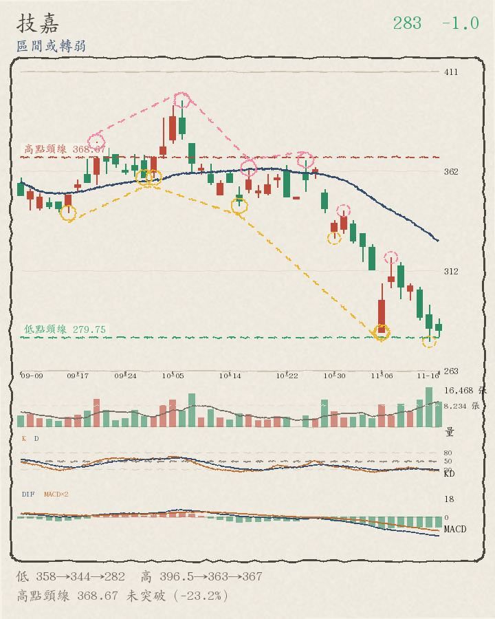
今天收紅、但成交量比平均少、跌破月線 300.175，跌破前一個轉折低點（高點頸線 396.5 還在收盤上方），轉折還沒走出明顯方向。
- 月線位置：收盤 278 在月線 300.175 之下；5 日線 263.1 也在月線之下（短均在下）；月線走平或向下、5 日線走平或向下
- 量能：成交量是 20 日均量的 0.67 倍，比 20 日均量少很多；收紅但量縮，量價背離
- 關鍵價位：高點頸線 396.5 還沒突破、還在收盤上方 29.9%；最近轉折高點 367（低於 24.3%）；最近轉折低點 282（低於 1.4%）
- 轉折結構：低點 358.5、344.5、282 與高點 396.5、363、367 都沒有明顯遞增，屬於區間震盪或轉弱；還沒確認的轉折低點 11-20 242.5、11-23 242.5；還沒確認的轉折高點 11-18 284.5、11-24 278（圖上虛線小圈）
區間或轉弱 成交金額 14.14 億・全榜第 51 名（上市第 46 名）
好條件 3/4：跌破前低、在月線之下、月線下彎
不好條件 2/5：量價攻擊（收紅＋大量）、外資賣超

今天帶量收紅、跌破月線 50.432，跌破前一個轉折低點（高點頸線 63.9 還在收盤上方），轉折還沒走出明顯方向。
- 月線位置：收盤 42.2 在月線 50.432 之下；5 日線 40.61 也在月線之下（短均在下）；月線走平或向下、5 日線走平或向下
- 量能：成交量是 20 日均量的 1.49 倍，比 20 日均量大不少；收紅又量增，量價配合
- 關鍵價位：高點頸線 63.9 還沒突破、還在收盤上方 34.0%；最近轉折高點 58（低於 27.2%）；最近轉折低點 49.5（低於 14.7%）
- 轉折結構：低點 60.5、56.3、49.5 與高點 62.6、63.9、58 都沒有明顯遞增，屬於區間震盪或轉弱；還沒確認的轉折低點 11-20 37.7；還沒確認的轉折高點 11-18 43.85、11-24 42.6（圖上虛線小圈）
區間或轉弱 成交金額 14.05 億・全榜第 52 名（上市第 47 名）
好條件 3/4：在月線之下、月線下彎、外資買超
不好條件 1/5：量價攻擊（收紅＋大量）
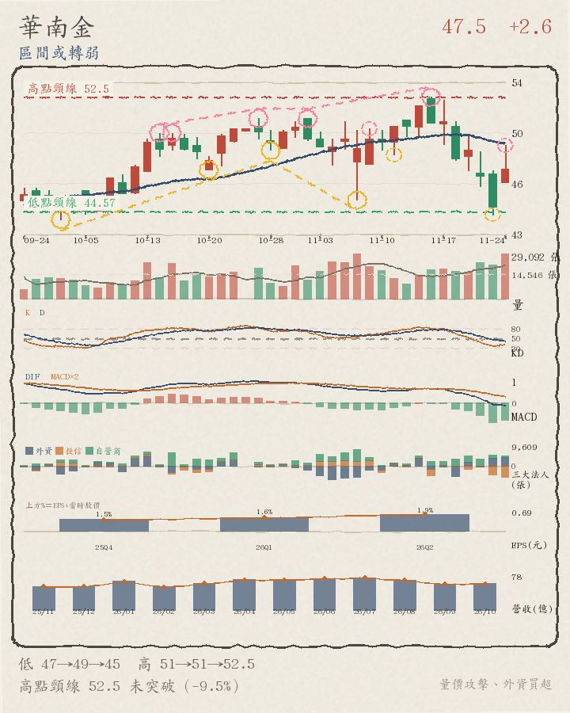
今天帶量收紅、跌破月線 49.292，離高點頸線 52.5 還差 9.5%，轉折還沒走出明顯方向。
- 月線位置：收盤 47.5 在月線 49.292 之下；5 日線 47.29 也在月線之下（短均在下）；月線走平或向下、5 日線走平或向下
- 量能：成交量是 20 日均量的 1.63 倍，比 20 日均量大不少；收紅又量增，量價配合
- 關鍵價位：高點頸線 52.5 還沒突破，差 9.5%；最近轉折高點 52.5（低於 9.5%）；最近轉折低點 45.35（高於 4.7%）
- 轉折結構：低點 47.45、48.8、45.35 與高點 51、51、52.5 都沒有明顯遞增，屬於區間震盪或轉弱；還沒確認的轉折低點 11-11 48.5、11-23 44.35；還沒確認的轉折高點 11-09 50.3、11-24 49.15（圖上虛線小圈）
區間或轉弱 成交金額 13.73 億・全榜第 53 名（上市第 48 名）
好條件 2/4：在月線之下、月線下彎
不好條件 1/5：外資賣超

今天收紅、但成交量比平均少、跌破月線 168.825，離高點頸線 199.5 還差 18.3%，轉折還沒走出明顯方向。
- 月線位置：收盤 163 在月線 168.825 之下；5 日線 155.3 也在月線之下（短均在下）；月線走平或向下、5 日線走平或向下
- 量能：成交量是 20 日均量的 0.27 倍，比 20 日均量少很多；收紅但量縮，量價背離
- 關鍵價位：高點頸線 199.5 還沒突破，差 18.3%；最近轉折高點 181（低於 9.9%）；最近轉折低點 152（高於 7.2%）
- 轉折結構：低點 182.5、173.5、152 與高點 194.5、199.5、181 都沒有明顯遞增，屬於區間震盪或轉弱；還沒確認的轉折低點 11-17 153、11-23 143；還沒確認的轉折高點 11-19 164、11-24 163（圖上虛線小圈）
剛突破前高 成交金額 13.68 億・全榜第 54 名（上市第 49 名）
好條件 2/4：月線下彎、外資買超
不好條件 2/5：站上月線、量價攻擊（收紅＋大量）

今天帶量收紅、站上月線 261.65，離高點頸線 333.5 還差 16.6%，高點還在墊高（但底部沒同步墊高）。
- 月線位置：收盤 278 在月線 261.65 之上；5 日線 273.1 也在月線之上（短均在上）；月線走平或向下、5 日線向上
- 量能：成交量是 20 日均量的 2.63 倍，比 20 日均量大不少；收紅又量增，量價配合
- 關鍵價位：高點頸線 333.5 還沒突破，差 16.6%；最近轉折高點 275（高於 1.1%）；最近轉折低點 252（高於 10.3%）
- 轉折結構：高點 329、333.5、275 墊高 10.2%（頭頭高），但低點 304.5、235.5、252 沒有同步墊高；還沒確認的轉折低點 11-23 261；還沒確認的轉折高點 11-18 275、11-24 303（圖上虛線小圈）
區間或轉弱 成交金額 13.1 億・全榜第 55 名（上市第 50 名）
好條件 3/4：跌破前低、在月線之下、月線下彎
不好條件 2/5：量價攻擊（收紅＋大量）、外資賣超
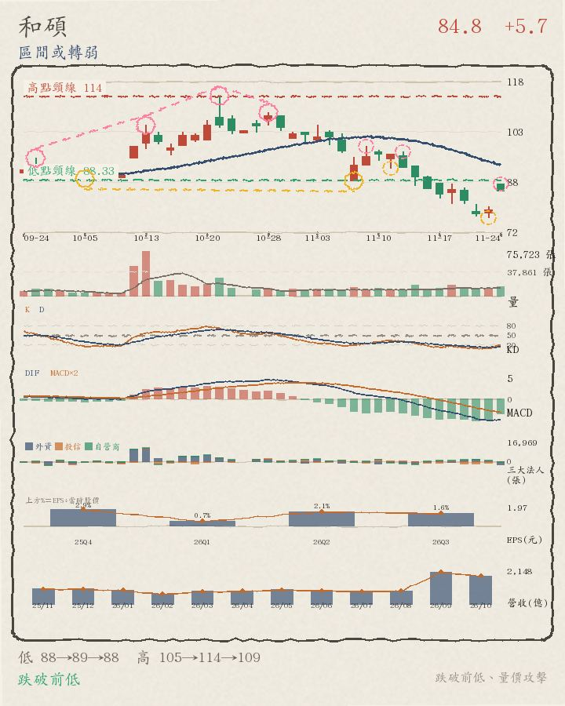
今天帶量收紅、跌破月線 92.925，跌破前一個轉折低點（高點頸線 114 還在收盤上方），轉折還沒走出明顯方向。
- 月線位置：收盤 84.8 在月線 92.925 之下；5 日線 81.86 也在月線之下（短均在下）；月線走平或向下、5 日線走平或向下
- 量能：成交量是 20 日均量的 1.32 倍，比 20 日均量大不少；收紅又量增，量價配合
- 關鍵價位：高點頸線 114 還沒突破、還在收盤上方 25.6%；最近轉折高點 109（低於 22.2%）；最近轉折低點 88（低於 3.6%）
- 轉折結構：低點 88.3、88.7、88 與高點 105、114、109 都沒有明顯遞增，屬於區間震盪或轉弱；還沒確認的轉折低點 11-11 91.9、11-23 76.7；還沒確認的轉折高點 11-12 96.9、11-24 87（圖上虛線小圈）
區間或轉弱 成交金額 85.3 億・全榜第 5 名（上櫃第 1 名）
好條件 2/4：在月線之下、月線下彎
不好條件 2/5：量價攻擊（收紅＋大量）、外資賣超

今天帶量收紅、跌破月線 2180.5，離高點頸線 3635 還差 44.3%，轉折還沒走出明顯方向。
- 月線位置：收盤 2025 在月線 2180.5 之下；5 日線 1986 也在月線之下（短均在下）；月線走平或向下、5 日線走平或向下
- 量能：成交量是 20 日均量的 4.15 倍，比 20 日均量大不少；收紅又量增，量價配合
- 關鍵價位：高點頸線 3635 還沒突破，差 44.3%；最近轉折高點 2425（低於 16.5%）；最近轉折低點 1825（高於 11.0%）
- 轉折結構：低點 2530、2470、1825 與高點 3635、2675、2425 都沒有明顯遞增，屬於區間震盪或轉弱；還沒確認的轉折低點 11-23 1705；還沒確認的轉折高點 11-18 2315、11-24 2080（圖上虛線小圈）
區間或轉弱 成交金額 49.06 億・全榜第 15 名（上櫃第 2 名）
好條件 2/4：在月線之下、月線下彎
不好條件 2/5：量價攻擊（收紅＋大量）、外資賣超

今天帶量收紅、跌破月線 141.15，離高點頸線 162 還差 20.4%，轉折還沒走出明顯方向。
- 月線位置：收盤 129 在月線 141.15 之下；5 日線 129.5 也在月線之下（短均在下）；月線走平或向下、5 日線走平或向下
- 量能：成交量是 20 日均量的 5.22 倍，比 20 日均量大不少；收紅又量增，量價配合
- 關鍵價位：高點頸線 162 還沒突破，差 20.4%；最近轉折高點 150.5（低於 14.3%）；最近轉折低點 129（高於 0.0%）
- 轉折結構：低點 143.5、143.5、129 與高點 158.5、162、150.5 都沒有明顯遞增，屬於區間震盪或轉弱；還沒確認的轉折低點 11-17 132、11-24 119.5；還沒確認的轉折高點 11-16 147.5、11-24 132（圖上虛線小圈）
區間或轉弱 成交金額 28.15 億・全榜第 27 名（上櫃第 3 名）
好條件 2/4：在月線之下、月線下彎
不好條件 2/5：量價攻擊（收紅＋大量）、外資賣超

今天帶量收紅、跌破月線 299.725，離高點頸線 385.5 還差 29.7%，轉折還沒走出明顯方向。
- 月線位置：收盤 271 在月線 299.725 之下；5 日線 257 也在月線之下（短均在下）；月線走平或向下、5 日線走平或向下
- 量能：成交量是 20 日均量的 1.37 倍，比 20 日均量大不少；收紅又量增，量價配合
- 關鍵價位：高點頸線 385.5 還沒突破，差 29.7%；最近轉折高點 323（低於 16.1%）；最近轉折低點 270（高於 0.4%）
- 轉折結構：低點 328、328、270 與高點 385.5、378.5、323 都沒有明顯遞增，屬於區間震盪或轉弱；還沒確認的轉折低點 11-17 263、11-23 230.5；還沒確認的轉折高點 11-18 288、11-24 274（圖上虛線小圈）
區間或轉弱 成交金額 23.97 億・全榜第 33 名（上櫃第 4 名）
好條件 1/4：月線下彎
不好條件 3/5：站上月線、量價攻擊（收紅＋大量）、外資賣超

今天帶量收紅、站上月線 778.45，離高點頸線 817 還差 3.8%，轉折還沒走出明顯方向。
- 月線位置：收盤 786 在月線 778.45 之上；5 日線 777.2 也在月線之下（短均在下）；月線走平或向下、5 日線走平或向下
- 量能：成交量是 20 日均量的 2.09 倍，比 20 日均量大不少；收紅又量增，量價配合
- 關鍵價位：高點頸線 817 還沒突破，差 3.8%；最近轉折高點 816（低於 3.7%）；最近轉折低點 698（高於 12.6%）
- 轉折結構：低點 771、766、698 與高點 817、812、816 都沒有明顯遞增，屬於區間震盪或轉弱；還沒確認的轉折低點 11-17 773、11-23 740；還沒確認的轉折高點 11-13 805、11-24 810（圖上虛線小圈）
剛突破前高 成交金額 17.4 億・全榜第 43 名（上櫃第 5 名）
好條件 1/4：外資買超
不好條件 4/5：站上月線、月線向上、突破頸線、量價攻擊（收紅＋大量）

今天收紅、站上月線 166.7，已站上高點頸線 171，高點還在墊高（但底部沒同步墊高）。
- 月線位置：收盤 173 在月線 166.7 之上；5 日線 171.8 也在月線之上（短均在上）；月線向上、5 日線向上
- 量能：成交量是 20 日均量的 1.04 倍，跟 20 日均量差不多
- 關鍵價位：高點頸線 171 已站上；最近轉折高點 171（高於 1.2%）；最近轉折低點 156（高於 10.9%）
- 轉折結構：高點 153.5、150、171 墊高 1.8%（頭頭高），但低點 134.5、134.5、156 沒有同步墊高；還沒確認的轉折低點 11-17 168.5、11-20 168；還沒確認的轉折高點 11-19 172.5、11-24 174（圖上虛線小圈）
區間或轉弱 成交金額 11.77 億・全榜第 56 名（上櫃第 6 名）
好條件 2/4：在月線之下、月線下彎
不好條件 2/5：量價攻擊（收紅＋大量）、外資賣超
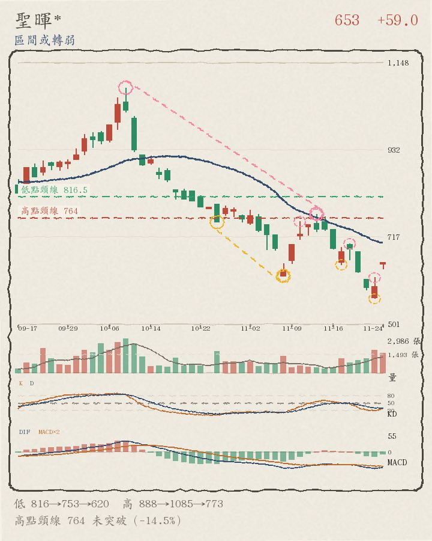
今天帶量收紅、跌破月線 702.25，離高點頸線 1085 還差 39.8%，轉折還沒走出明顯方向。
- 月線位置：收盤 653 在月線 702.25 之下；5 日線 631 也在月線之下（短均在下）；月線走平或向下、5 日線走平或向下
- 量能：成交量是 20 日均量的 2.07 倍，比 20 日均量大不少；收紅又量增，量價配合
- 關鍵價位：高點頸線 1085 還沒突破，差 39.8%；最近轉折高點 773（低於 15.5%）；最近轉折低點 620（高於 5.3%）
- 轉折結構：低點 816、753、620 與高點 888、1085、773 都沒有明顯遞增，屬於區間震盪或轉弱；還沒確認的轉折低點 11-17 648、11-23 564；還沒確認的轉折高點 11-18 700、11-24 653（圖上虛線小圈）
高點墊高、底部不穩 成交金額 10.84 億・全榜第 57 名（上櫃第 7 名）
好條件 1/4：外資買超
不好條件 2/5：站上月線、月線向上

今天收紅、但成交量比平均少、站上月線 48.108，離高點頸線 66.4 還差 23.3%，高點還在墊高（但底部沒同步墊高）。
- 月線位置：收盤 50.9 在月線 48.108 之上；5 日線 50.71 也在月線之上（短均在上）；月線向上、5 日線走平或向下
- 量能：成交量是 20 日均量的 0.91 倍，比 20 日均量少一些；收紅但量縮，量價背離
- 關鍵價位：高點頸線 66.4 還沒突破，差 23.3%；最近轉折高點 66.4（低於 23.3%）；最近轉折低點 37.85（高於 34.5%）
- 轉折結構：高點 44.3、46.45、66.4 墊高 49.9%（頭頭高），但低點 36.3、36.35、37.85 沒有同步墊高；還沒確認的轉折低點 11-20 45.6；還沒確認的轉折高點 11-23 54.1（圖上虛線小圈）
區間或轉弱 成交金額 7.54 億・全榜第 58 名（上櫃第 8 名）
好條件 1/4：月線下彎
不好條件 3/5：站上月線、量價攻擊（收紅＋大量）、外資賣超

今天帶量收紅、站上月線 22.212，離高點頸線 31.65 還差 29.5%，轉折還沒走出明顯方向。
- 月線位置：收盤 22.3 在月線 22.212 之上；5 日線 20.79 也在月線之下（短均在下）；月線走平或向下、5 日線走平或向下
- 量能：成交量是 20 日均量的 1.11 倍，比 20 日均量大一些；收紅又量增，量價配合
- 關鍵價位：高點頸線 31.65 還沒突破，差 29.5%；最近轉折高點 26.4（低於 15.5%）；最近轉折低點 19.3（高於 15.5%）
- 轉折結構：低點 25、24.65、19.3 與高點 31.65、28.55、26.4 都沒有明顯遞增，屬於區間震盪或轉弱；還沒確認的轉折低點 11-20 18.8；還沒確認的轉折高點 11-10 22.3、11-24 23.1（圖上虛線小圈）
區間或轉弱 成交金額 7.4 億・全榜第 59 名（上櫃第 9 名）
好條件 2/4：在月線之下、月線下彎
不好條件 1/5：外資賣超

今天收紅、但成交量比平均少、跌破月線 1653.75，離高點頸線 2350 還差 32.1%，轉折還沒走出明顯方向。
- 月線位置：收盤 1595 在月線 1653.75 之下；5 日線 1468 也在月線之下（短均在下）；月線走平或向下、5 日線走平或向下
- 量能：成交量是 20 日均量的 0.12 倍，比 20 日均量少很多；收紅但量縮，量價背離
- 關鍵價位：高點頸線 2350 還沒突破，差 32.1%；最近轉折高點 1765（低於 9.6%）；最近轉折低點 1405（高於 13.5%）
- 轉折結構：低點 1785、1865、1405 與高點 2350、2090、1765 都沒有明顯遞增，屬於區間震盪或轉弱；還沒確認的轉折低點 11-17 1430、11-23 1260；還沒確認的轉折高點 11-18 1625、11-24 1595（圖上虛線小圈）
區間或轉弱 成交金額 5.56 億・全榜第 60 名（上櫃第 10 名）
好條件 2/4：在月線之下、月線下彎
不好條件 1/5：外資賣超

今天收紅、但成交量比平均少、跌破月線 492.475，離高點頸線 630 還差 28.7%，轉折還沒走出明顯方向。
- 月線位置：收盤 449 在月線 492.475 之下；5 日線 426.3 也在月線之下（短均在下）；月線走平或向下、5 日線走平或向下
- 量能：成交量是 20 日均量的 0.04 倍，比 20 日均量少很多；收紅但量縮，量價背離
- 關鍵價位：高點頸線 630 還沒突破，差 28.7%；最近轉折高點 573（低於 21.6%）；最近轉折低點 403.5（高於 11.3%）
- 轉折結構：低點 454、479、403.5 與高點 630、596、573 都沒有明顯遞增，屬於區間震盪或轉弱；還沒確認的轉折低點 11-23 351；還沒確認的轉折高點 11-18 510、11-24 449（圖上虛線小圈）
區間或轉弱 成交金額 5.41 億・全榜第 61 名（上櫃第 11 名）
好條件 2/4：在月線之下、月線下彎
不好條件 1/5：外資賣超

今天收紅、但成交量比平均少、跌破月線 131.425，離高點頸線 170 還差 28.8%，轉折還沒走出明顯方向。
- 月線位置：收盤 121 在月線 131.425 之下；5 日線 115.6 也在月線之下（短均在下）；月線走平或向下、5 日線走平或向下
- 量能：成交量是 20 日均量的 0.29 倍，比 20 日均量少很多；收紅但量縮，量價背離
- 關鍵價位：高點頸線 170 還沒突破，差 28.8%；最近轉折高點 142（低於 14.8%）；最近轉折低點 113.5（高於 6.6%）
- 轉折結構：低點 152.5、159、113.5 與高點 170、170、142 都沒有明顯遞增，屬於區間震盪或轉弱；還沒確認的轉折低點 11-17 117、11-23 102.5；還沒確認的轉折高點 11-18 128、11-24 121（圖上虛線小圈）
高點墊高、底部不穩 成交金額 5.2 億・全榜第 62 名（上櫃第 12 名）
好條件 1/4：外資買超
不好條件 2/5：站上月線、月線向上

今天收紅、但成交量比平均少、站上月線 1317，離高點頸線 1585 還差 12.6%，高點還在墊高（但底部沒同步墊高）。
- 月線位置：收盤 1385 在月線 1317 之上；5 日線 1348 也在月線之上（短均在上）；月線向上、5 日線走平或向下
- 量能：成交量是 20 日均量的 0.21 倍，比 20 日均量少很多；收紅但量縮，量價背離
- 關鍵價位：高點頸線 1585 還沒突破，差 12.6%；最近轉折高點 1585（低於 12.6%）；最近轉折低點 1065（高於 30.0%）
- 轉折結構：高點 1470、1575、1585 墊高 7.8%（頭頭高），但低點 1450、1315、1065 沒有同步墊高；還沒確認的轉折低點 11-17 1315、11-23 1105；還沒確認的轉折高點 11-24 1385（圖上虛線小圈）
區間或轉弱 成交金額 4.77 億・全榜第 63 名（上櫃第 13 名）
好條件 3/4：跌破前低、在月線之下、月線下彎
不好條件 2/5：量價攻擊（收紅＋大量）、外資賣超
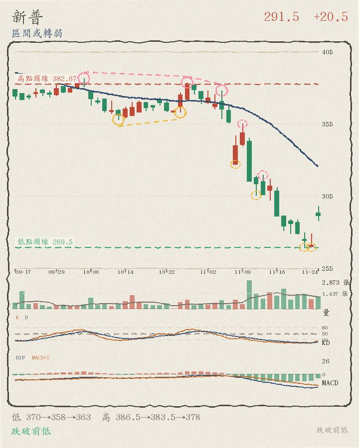
今天帶量收紅、跌破月線 325.475，跌破前一個轉折低點（高點頸線 386.5 還在收盤上方），轉折還沒走出明顯方向。
- 月線位置：收盤 293 在月線 325.475 之下；5 日線 280.6 也在月線之下（短均在下）；月線走平或向下、5 日線走平或向下
- 量能：成交量是 20 日均量的 1.60 倍，比 20 日均量大不少；收紅又量增，量價配合
- 關鍵價位：高點頸線 386.5 還沒突破、還在收盤上方 24.2%；最近轉折高點 378（低於 22.5%）；最近轉折低點 363（低於 19.3%）
- 轉折結構：低點 370、358、363 與高點 386.5、383.5、378 都沒有明顯遞增，屬於區間震盪或轉弱；還沒確認的轉折低點 11-20 269.5、11-23 269.5；還沒確認的轉折高點 11-12 319.5、11-24 298（圖上虛線小圈）
區間或轉弱 成交金額 4.66 億・全榜第 64 名（上櫃第 14 名）
好條件 3/4：跌破前低、在月線之下、月線下彎
不好條件 1/5：外資賣超
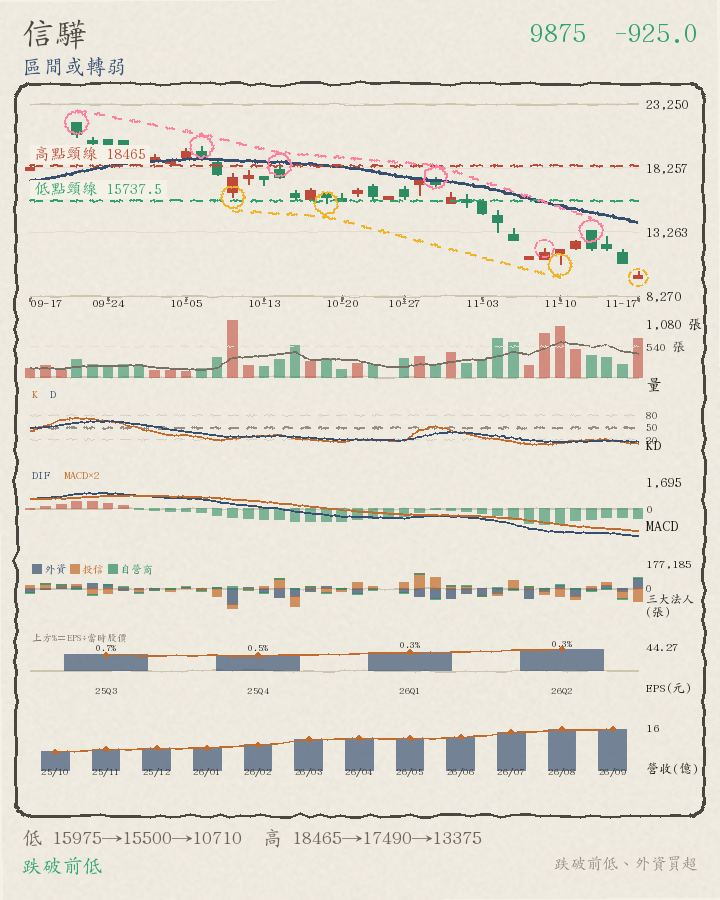
今天收紅、但成交量比平均少、跌破月線 12160.2，跌破前一個轉折低點（高點頸線 18465 還在收盤上方），轉折還沒走出明顯方向。
- 月線位置：收盤 9140 在月線 12160.2 之下；5 日線 8748 也在月線之下（短均在下）；月線走平或向下、5 日線走平或向下
- 量能：成交量是 20 日均量的 0.12 倍，比 20 日均量少很多；收紅但量縮，量價背離
- 關鍵價位：高點頸線 18465 還沒突破、還在收盤上方 50.5%；最近轉折高點 13375（低於 31.7%）；最近轉折低點 10710（低於 14.7%）
- 轉折結構：低點 15975、15500、10710 與高點 18465、17490、13375 都沒有明顯遞增，屬於區間震盪或轉弱；還沒確認的轉折低點 11-23 7295；還沒確認的轉折高點 11-09 11990、11-24 9140（圖上虛線小圈）
剛突破前高 成交金額 4.31 億・全榜第 65 名（上櫃第 15 名）
好條件 2/4：月線下彎、外資買超
不好條件 2/5：站上月線、量價攻擊（收紅＋大量）

今天帶量收紅、站上月線 178.45，離高點頸線 190.5 還差 1.3%，高點還在墊高（但底部沒同步墊高）。
- 月線位置：收盤 188 在月線 178.45 之上；5 日線 179.7 也在月線之上（短均在上）；月線走平或向下、5 日線向上
- 量能：成交量是 20 日均量的 2.53 倍，比 20 日均量大不少；收紅又量增，量價配合
- 關鍵價位：高點頸線 190.5 還沒突破，差 1.3%；最近轉折高點 187（高於 0.5%）；最近轉折低點 157（高於 19.7%）
- 轉折結構：高點 190.5、187、187 墊高 2.7%（頭頭高），但低點 181.5、181.5、157 沒有同步墊高；還沒確認的轉折低點 11-17 172、11-23 166；還沒確認的轉折高點 11-19 187、11-24 192（圖上虛線小圈）
區間或轉弱 成交金額 3.47 億・全榜第 66 名（上櫃第 16 名）
好條件 3/4：跌破前低、在月線之下、月線下彎
不好條件 1/5：外資賣超
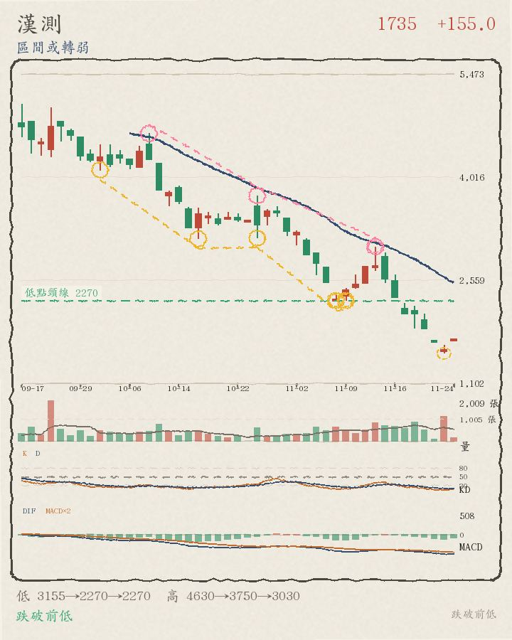
今天收紅、但成交量比平均少、跌破月線 2521.75，跌破前一個轉折低點（高點頸線 4630 還在收盤上方），轉折還沒走出明顯方向。
- 月線位置：收盤 1735 在月線 2521.75 之下；5 日線 1792 也在月線之下（短均在下）；月線走平或向下、5 日線走平或向下
- 量能：成交量是 20 日均量的 0.36 倍，比 20 日均量少很多；收紅但量縮，量價背離
- 關鍵價位：高點頸線 4630 還沒突破、還在收盤上方 62.5%；最近轉折高點 3030（低於 42.7%）；最近轉折低點 2270（低於 23.6%）
- 轉折結構：低點 3155、2270、2270 與高點 4630、3750、3030 都沒有明顯遞增，屬於區間震盪或轉弱；還沒確認的轉折低點 11-23 1525；還沒確認的轉折高點 11-24 1735（圖上虛線小圈）
區間或轉弱 成交金額 3.28 億・全榜第 67 名（上櫃第 17 名）
好條件 2/4：在月線之下、月線下彎
不好條件 2/5：量價攻擊（收紅＋大量）、外資賣超
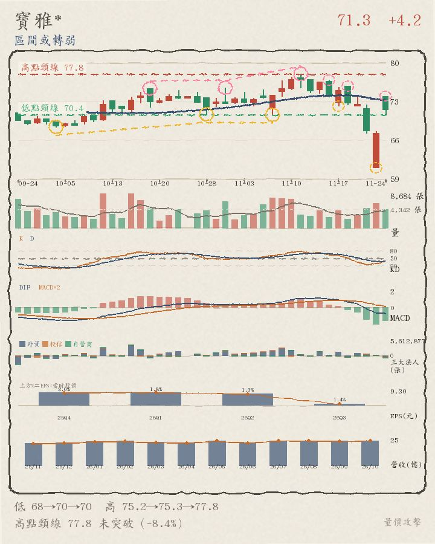
今天帶量收紅、跌破月線 73.16，離高點頸線 77.8 還差 8.4%，轉折還沒走出明顯方向。
- 月線位置：收盤 71.3 在月線 73.16 之下；5 日線 70.14 也在月線之下（短均在下）；月線走平或向下、5 日線走平或向下
- 量能：成交量是 20 日均量的 1.06 倍，比 20 日均量大一些；收紅又量增，量價配合
- 關鍵價位：高點頸線 77.8 還沒突破，差 8.4%；最近轉折高點 77.8（低於 8.4%）；最近轉折低點 70.4（高於 1.3%）
- 轉折結構：低點 68.2、70.5、70.4 與高點 75.2、75.3、77.8 都沒有明顯遞增，屬於區間震盪或轉弱；還沒確認的轉折低點 11-17 72、11-23 60.8；還沒確認的轉折高點 11-18 75.6、11-24 73.8（圖上虛線小圈）
區間或轉弱 成交金額 3.22 億・全榜第 68 名（上櫃第 18 名）
好條件 3/4：在月線之下、月線下彎、外資買超
不好條件 0/5：無

今天收紅、但成交量比平均少、跌破月線 126.15，離高點頸線 150.5 還差 25.2%，轉折還沒走出明顯方向。
- 月線位置：收盤 112.5 在月線 126.15 之下；5 日線 109.2 也在月線之下（短均在下）；月線走平或向下、5 日線走平或向下
- 量能：成交量是 20 日均量的 0.03 倍，比 20 日均量少很多；收紅但量縮，量價背離
- 關鍵價位：高點頸線 150.5 還沒突破，差 25.2%；最近轉折高點 150.5（低於 25.2%）；最近轉折低點 109.5（高於 2.7%）
- 轉折結構：低點 113、124、109.5 與高點 149、143.5、150.5 都沒有明顯遞增，屬於區間震盪或轉弱；還沒確認的轉折低點 11-18 110、11-23 90.4；還沒確認的轉折高點 11-10 140.5、11-24 112.5（圖上虛線小圈）
區間或轉弱 成交金額 3.22 億・全榜第 69 名（上櫃第 19 名）
好條件 2/4：在月線之下、月線下彎
不好條件 1/5：外資賣超

今天收紅、但成交量比平均少、跌破月線 4224.75，離高點頸線 6160 還差 32.1%，轉折還沒走出明顯方向。
- 月線位置：收盤 4185 在月線 4224.75 之下；5 日線 3979 也在月線之下（短均在下）；月線走平或向下、5 日線走平或向下
- 量能：成交量是 20 日均量的 0.07 倍，比 20 日均量少很多；收紅但量縮，量價背離
- 關鍵價位：高點頸線 6160 還沒突破，差 32.1%；最近轉折高點 5100（低於 17.9%）；最近轉折低點 3355（高於 24.7%）
- 轉折結構：低點 5090、4995、3355 與高點 6160、5150、5100 都沒有明顯遞增，屬於區間震盪或轉弱；還沒確認的轉折低點 11-18 3880、11-23 3250；還沒確認的轉折高點 11-18 4390、11-24 4185（圖上虛線小圈）
區間或轉弱 成交金額 3.16 億・全榜第 70 名（上櫃第 20 名）
好條件 3/4：跌破前低、在月線之下、月線下彎
不好條件 1/5：外資賣超

今天收紅、但成交量比平均少、跌破月線 1970.25，跌破前一個轉折低點（高點頸線 3210 還在收盤上方），轉折還沒走出明顯方向。
- 月線位置：收盤 1525 在月線 1970.25 之下；5 日線 1495 也在月線之下（短均在下）；月線走平或向下、5 日線走平或向下
- 量能：成交量是 20 日均量的 0.06 倍，比 20 日均量少很多；收紅但量縮，量價背離
- 關鍵價位：高點頸線 3210 還沒突破、還在收盤上方 52.5%；最近轉折高點 2320（低於 34.3%）；最近轉折低點 1705（低於 10.6%）
- 轉折結構：低點 2585、2365、1705 與高點 3210、2795、2320 都沒有明顯遞增，屬於區間震盪或轉弱；還沒確認的轉折低點 11-23 1230；還沒確認的轉折高點 11-24 1525（圖上虛線小圈）